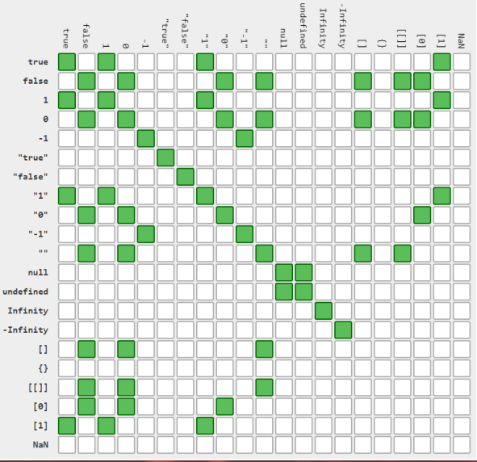
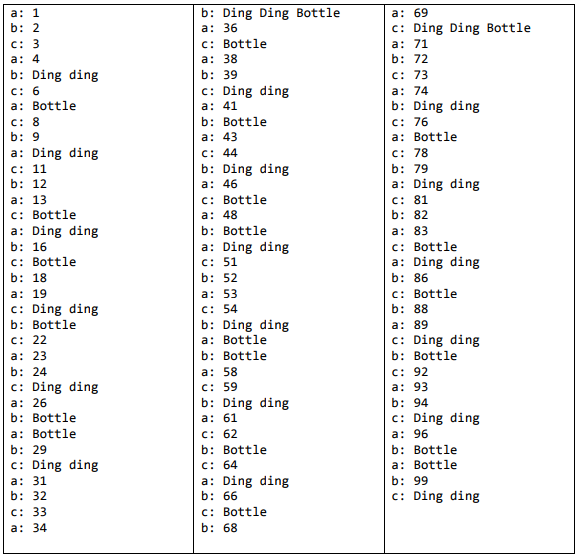
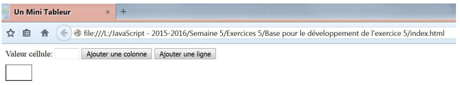
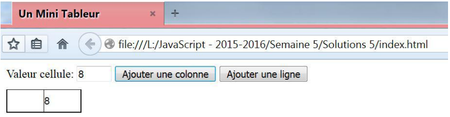
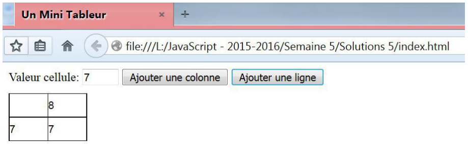
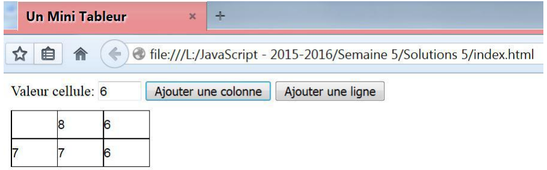
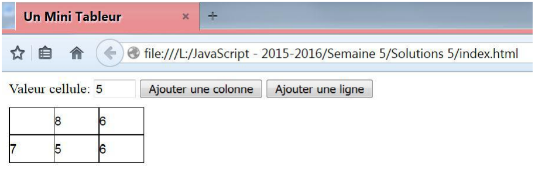
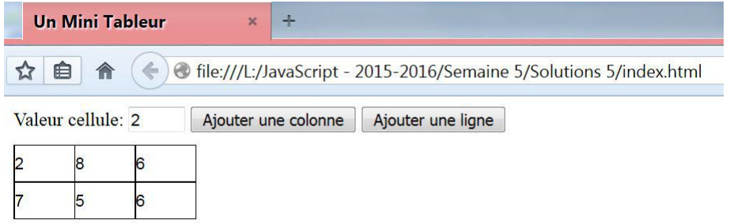
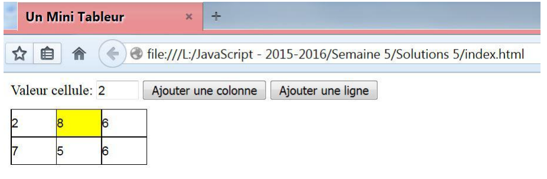
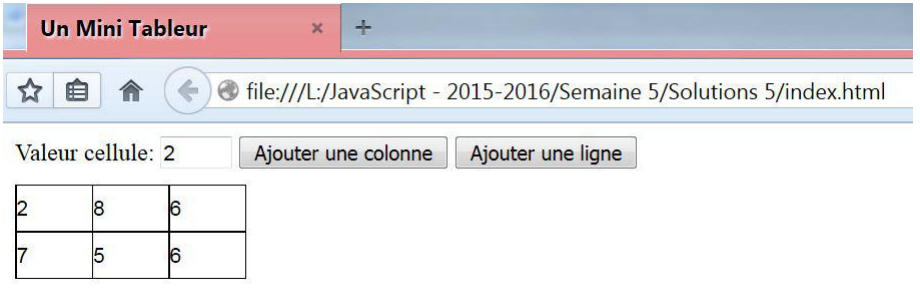

JavaScript, jQuery, AJAX et JSON :
Le JavaScript est un langage vaguement inspiré de la famille des langages C (comme Java, C++, Objective-C, ...).
Le JavaScript est un langage vaguement inspiré de la famille des langages C (comme Java, C++, Objective-C, ...).
JavaScript est un langage de scripts essentiellement utilisé pour enrichir les pages HTML de code exécutable par le navigateur. Attention ! Il n' a guère qu'une partie de son nom en commun avec le langage Java ! L'utilisation de JavaScript s'étend de plus en olus vers de nouvelles cibles comme la programmation sur le serveur. Nous ne prendrons en compte ici que son utilisation pour les navigateurs.
Ce langage permet d'apporter du dynamisme au niveau des pagesWeb. Nous percevons immédiatement une contradiction entre le fait qu'un navigateur doive essentiemment se contenter de réaliser l'affichage de pages et celui de lui faire exécuter du code. On veillera donc à limiter au maximum l'utilisation de code JavaScript pour :
Veillons aussi à produire des pages qui pourront être exploitées sur un maximum de types de navigateurs en n'oubliant pas que cerains d'entre eux n'intègrent pas JavaScript (exemple : certains browsers de smartphones) et que certains utilisateurs inhibent JavaScript.
JavaScript est le premier outil nous permettant de faire évoluer un navigateur de la notion de "client léger" à celle de "client riche".
De manière générale, JavaScript est utilise pour :
Il peut aussi être utilisé pour faire clignoter une guirlande, faire traverser l'écran par un canard ou demander à un poisson de suivre votre souris (comme quoi il faut savoir ne pas abuser des bonnes choses, ...).
Un script JavaScript sera fourni dans la balise script avec l'attribut type de valeur text/JavaScript. Il existe également une version plus complexe tenant compte des vieux navigateurs qui ne gèrent pas le JavaScript. En HTML5, on déconseille de spécifier explicitement le type s'il s'agit de text/JavaScript : https://developer.mozilla.org/en-US/docs/Web/HTML/Element/script.
Soit direment dans le code HTML :
<script type="text/JavaScript">
// code du script...
</script>Soit par référence à un fichier externe :
<script type="text/JavaScript" src="scriptname.js"></script>
On préfèrera cette deuxième option par souci de lisibilité du code.
Une balise <script type="text/JavaScript"> peut apparaîtra soit dans le head de la page, soit dans le body. Le chargement du fichier de script JavaScript interrompt celui du fichier HTML. Tous les scripts invoqués dans le fichier JavaScript sont immédiatement exécutés lors du chargement dudit fichier.
Une instruction JS ("statement") se compose de :
Dans le cadre de ce cours, nous nous obligerons à respecter la convention suivante :
var i = 1; // Number
var f = 1.0; // Number
var s = "chaîne; // string
var s2 = 'chaîne'; // string
var s3 = new String('chaîne'); // string
var a = [1, 2.0, "3"]; // Array
var b = true; // Boolean
var u; // undefined
var n = null; // nullNotez la différence entre undefined (la variable n'a pas été affectée, son type est inconnu) et null (cas particulier des objets).
| instanceof | Number | String | Array | Object | Booelan | Function |
|---|---|---|---|---|---|---|
| 1 | ||||||
| new Number(1) | X | X | ||||
| "a" | ||||||
| new String("a") | X | X | ||||
| [1] // Array | X | X | ||||
| new Array() | X | X | ||||
| {} // Object | X | |||||
| new Object() | X | |||||
| function() | X | X | ||||
| true | ||||||
| new Boolean(true) | X | X | ||||
| null | ||||||
| undefined |
var color1 = new String("green");
color1 instanceof String;
// returns true
var color2 = "coral";
color2 instanceof String;
// returns false (color2 is not a String object)1 et new Number(1) sont fonctionnellement identiques en JavaScript. Cependant, en internce, 1 correspond à un int Java, tanis que New Number(1) correspond à un Integer. Ceci explique le comportement bizarre d'instanceof.
L'opérateur typeof v : renvoie une chaîne de caractères décrivant le type de v.
| typeof | |
|---|---|
| 1 | "number" |
| new Number(1) | "object" |
| "a" | "string" |
| new String("a") | "object" |
| [1] // Array | "object" |
| new Array() | "object" |
| {} // Object | "object" |
| new Object() | "object" |
| function() | "function" |
| true | "boolean" |
| new Boolean(true) | "object" |
| null | "object" |
| undefined | "undefined" |
Pour être vraiment certain d'un type (par exemple, String), il faudra donc utiliser typeof et instanceof :
typeof s == 'string' || s instanceof String;JavaScript n'est pas faiblement typé mais certains opérateurs se comportent comme si c'était le cas !
Un transtypage est alors automatiquement appliqué.
L'opérateur == effectue un tel transtypage. Ceci donne des résultats parfois surprenants. En général, c'est une mauvaise idée de l'utiliser.
=== est l'opérateur d'égalité qui n'effectue pas de transtypage. En général, c'est celui-ci qui doit vraiment être utilisé, pas ==.
Idem pour !== et !=.
Plaçons ceci dans le body d'un de nos précédents documents HTML :
<script type="text/JavaScript">
document.write("Added by JavaScript code : ");
document.write("He2b-Esi <3");
</script>Nous pouvons aussi sauvegarder ce script à part dans un fichier Myscript.js, dont la référence relative au document HTML ou sa référence absolue sera fournie dans l'attribut source de l'élément script. Si le fichier se trouve dans le même répertoire que le document HTML, nous pourrons le référencer comme suit :
<script type="text/JavaScript" src="MyScript.js"></script>
Un cas classique est celui de la validation d'un champ de saisie devant être numérique. Nous allons réaliser la validation lors de la perte du focus par le contrôle (voir http://www.w3schools.com/tags/ref_eventattributes.asp pour une liste des événements gérés).
<!DOCTYPE html>
<html lang="fr">
<head>
<meta charset="UTF-8">
<title>Validation de formulaire</title>
<script type="text/JavaScript">
function validateNumeric(champ) {
if (isFinite(champ.value)) {
return true;
} else {
alert("Vous ne pouvez entrer que des nombres !");
return false;
}
}
</script>
</head>
<body>
<h1>Validation externe</h1>
<form name="InfoPersonnelle">
Âge : <input type="text" name="saisie" onblur="validateNumeric">
</form>
</body>
</html>Un Cookie est un petit fichier texte, chiffré ou non, que des sites visités peuvent stocker sur votre machine pour être récupérés d'une visite à l'autre (pour vous faciliter la navigation, pour vous tracer, ...). Seul le site ayant stocké le cookie y a accès.
Un cookie est une paire nom=valeur associé à un serveur et stockée sur le poste client. Lorsque le navigateur envoie une requête à un serveur, il lui envoie également tous les cookies associés.
Un cookie possède aussi une date d'expiration. JavaScript permet, via la propriété cookie du document, de lire et de créer des cookies. La version simplifiée qu'on présente ici peut être prise en défaut dans certains cas particuliers.
function setCookie(nom, valeur) {
document.cookie = nom + "=" + encodeURI(valeur);
}
function getCookie(nom) {
// Tous les cookies sont reçus dans une seule chaîne,
// séparés par des point-virgules, qu'il faut découper.
start = document.cookie.indexOf(nom + "=");
if (start != -1) {
start = start + nom.length + 1;
end = document.cookie.indexOf(";", start);
if (end == -1) {
end = document.cookie.length;
}
return unescape(document.cookie.substring(start, end));
} else {
return "";
}
}Le Document Object Model va nous permettre de manipuler (consulter/modifier) notre page web via le code JavaScript. On va pouvoir, par exemple, ajouter un message d'erreur à côté d'un champ erroné. C'est également un élément essentiel d'Ajax que nous verrons ultérieurement.
Le DOM (Document Object Model), ou modèle objet de document, est une API pour les documents HTML et XML. Le DOM fournitune représentation structurelle du document, permettant de modifier son contenu et sa présentation visuelle. Fondamentalement, il relie les pages Web aux scripts et langages de programmation.
Concrètement, cela signifie qu'au niveau de JavaScript on dispose d'une représentation du document HTML sous forme d'un "arbre", chaque "noeud" correspond à une balise du document. Cet arbre peut être parcouru mais surtout modifié. Les possibilités sont énormes mais nous l'utiliserons essentiellement :
Nous ne présentant que la toute petite partie qui sert à notre propos. Nous en dirons un peu plus lorsque nous introduirons les technologies XSL et, comme d'habitude, vous trouverez plus d'informations sur le site de la W3 Schools (http://www.w3schools.com/jsref/dom_obj_document.asp).
On peut accéder à un ou des noeuds de l'arbre :
On peut interroger un noeud via des attributs :
Si le document contient <span id="titre"></span>, alors le bout de code suivant permet d'insérer un titre :
document.getElementById("titre").innerHTML = "Compléments Applications";
Le code suivant affiche un message avec le nombre de paragraphes (à lancer via l'événement onload de la balise <body> par exemple).
function countParagraphs {
var myParagraphs = document.getElementsByTagName("p");
alert(myParagraphs.length);
}Tout comme il est de bonne pratique de découpler le contenu HTML de la mise en forme CSS, en liant le(s) fichier(s) CSS à l'aide de la balise <link>, il est conseillé de séparer HTML et JavaScript à l'aide de l'attribut src de la balise <script>.
Par ailleurs, il est également conseillé de découpler fortement les éléments HTML du JavaScript en associant les gestionnaires d'événements dynamiques en JavaScript plutôt que statiquement dans le document HTML.
Dans la suite, voyons en détails comment associer une fonction de validation à un champ d'un formulaire, comme cela a été déjà rapidemment montré ci-dessus.
Reprenons le document HTML avec un script interne :
<!DOCTYPE html>
<html lang="fr">
<head>
<meta charset="UTF-8">
<title>Validation de formulaire</title>
<script type="text/JavaScript">
function validateNumeric(champ) {
if (isFinite(champ.value)) {
return true;
} else {
alert("Vous ne pouvez entrer que des nombres !");
return false;
}
}
</script>
</head>
<body>
<h1>Validation externe</h1>
<form name="InfoPersonnelle">
Âge : <input type="text" name="saisie" onblur="validateNumeric">
</form>
</body>
</html>Le script est déplacé dans un fichier formvalidate.js :
function validateNumeric(champ) {
if (isFinite(champ.value)) {
return true;
} else {
alert("Vous ne pouvez entrer que des nombres !");
return false;
}
}Et le fichier HTML est inchangé à l'exception du lien vers ce script :
<!DOCTYPE html>
<html lang="fr">
<head>
<meta charset="UTF-8">
<title>Validation de formulaire</title>
<script type="text/JavaScript" src="formvalidate.js"></script>
</head>
<body>
<h1>Validation externe</h1>
<form name="InfoPersonnelle">
Âge : <input type="text" name="saisie" onblur="validateNumeric">
</form>
</body>
</html>On cherche à associer dynamiquement un gestionnaire d'événement à un élément HTML. Pour ce faire, on utilise le DOM via JavaScript dans un script association_event.js :
document.getElementById("age").addEventListener("blur", function(event) {
validateNumeric(event.target.value);
}
Et on ajoute un lien vers ce script dans le code HTML :
<!DOCTYPE html>
<html lang="fr">
<head>
<meta charset="UTF-8">
<title>Validation de formulaire</title>
<script type="text/JavaScript" src="formvalidate.js"></script>
</head>
<body>
<h1>Validation externe</h1>
<form name="InfoPersonnelle">
Âge : <input type="text" name="saisie">
</form>
<script type="text/JavaScript" src="association_event.js"></script>
</body>
</html>Notez qu'on préfère charger les scripts d'association en fin de la balise <body>, puisque le code JavaScript est exécuté dès qu'il est chargé; les éléments HTML doivent donc être présents dans le DOM au moment de l'exécution du code.
Si toutefois on veut charger le script à un autre endroit du code HTML, l'attribut defer permet de reporter le chargement du script après la fin du chargement de la page HTML dans son entièreté. Cet attribut n'est disponible que lorsqu'un script est chargé via l'attribut src.
Par exemple, on pourrait avoir un fichier de script unique formvalidate_association_events.js :
function validateNumeric (champ) {
if (isFinite(champ.value)) {
return true;
} else {
alert("Vous ne pouvez entrer que des nombres !");
return false;
}
}
const ageElement = document.getElementById("age");
ageElement.addEventListener("blur", function(event) {
validateNumeric(event.target.value);
});
Qui est chargé dans le head comme suit :
<!DOCTYPE html>
<html lang="fr">
<head>
<meta charset="UTF-8">
<title>Validation de formulaire</title>
<script defer type="text/JavaScript" src="formvalidate_association_events.js"></script>
</head>
<body>
<h1>Validation externe</h1>
<form name="InfoPersonnelle">
Âge : <input type="text" name="saisie">
</form>
</body>
</html>L'événment DOMContentLoaded est émis lorsque le document HTML est chargé et traité dans son entièreté. On peut donc aussi s'en servir afin d'exécuter du code JavaScript une fois que le document complet est à notre disposition.
Notre script devient alors :
function validateNumeric (champ) {
if (isFinite(champ.value)) {
return true;
} else {
alert("Vous ne pouvez entrer que des nombres !");
return false;
}
}
document.addEventListener("DOMContentLoaded", function() {
const ageElement = document.getElementById("age");
ageElement.addEventListener("blur", function(event) {
validateNumeric(event.target.value);
});
});
Qui est chargé dans le head comme suit :
<!DOCTYPE html>
<html lang="fr">
<head>
<meta charset="UTF-8">
<title>Validation de formulaire</title>
<script type="text/JavaScript" src="formvalidate_association_DOMContentLoaded.js"></script>
</head>
<body>
<h1>Validation externe</h1>
<form name="InfoPersonnelle">
Âge : <input type="text" name="saisie">
</form>
</body>
</html>La méthode recommandée est celle qui utilise l'attribut defer de la balise <script>. Elle est en effet :
jQuery est une librairie JavaScript qui facilite grandement l'écriture de scripts.
JavaScript est parfois lourd à utiliser et impose de reprendre régulièrement le même code, de truffer le code de tests pour s'adapter au navigateur, ... Beaucoup de librairies de scripts permettent d'alléger ou éliminer ces défauts : jQuery, Mootools, Dojo, ...
jQuery est certainement la plus répondue et un grand nombre de firmes majeures du domaine de l'IT l'utilise). Ses fonctionnalités incluent :
Une référence de jQuery se trouve à l'adresse https://jquery.com/.
La librairie elle-même doit référencée dans votre page HTML, soit elle doit être fournie par votre site soit être référencée sur un site tiers.
Souvent, on utilise un CDN (ou Content Delivery Network) : une infrastructure réseau permettant de fournir vite et sans interruption de service des ressources stables dans le temos, par exemple celui de :
D'autres CDN peuvent se trouver à l'adresse https://jquery.com/download/#other-cdns. Ces CDN ont l'avantage d'être utilisés par tellement de sites que les clients de nos pages risquent d'avoir déjà la librairie en mémoire cache (et ne doivent donc pas le re-télécharger). En outre, même si la librairie n'est pas en cache, son téléchargement par l'utilisateur n'utilisera de toute façon pas la bande passante de notre site.
On inclut cette librairie comme tout autre script JavaScript, donc :
<script src="https://code.jquery.com/jquery-3.4.1.min.js" integrity="sha256-CSXorXvZcTkaix6Yvo6HppcZGetbYMGWSFlBw8HdCJo=" crossorigin="anonymous"></script>
Ou plus simplement :
<script src="https://ajax.googleapis.com/ajax/libs/jquery/3.4.1/jquery.min.js"></script>
Ces librairies sont condensées (minified en anglais, représenté dans le nom du fichier par .min pour minimiser le trafic réseau, donc quasiment illisibles (on parle de version de "production"). Nous pouvons accéder à la librairie "lisible à l'adresse https://code.jquery.com/jquery-3.4.1.js. Cette version est généralement utilisée pour le développement, elle nous permettra de vérifier qu'il s'agit bien d'un "gros" fichier de fonctions JavaScript.
Notons bien sûr que, puisque les scripts JavaScript sont chargés dans leur ordre d'apparition dans le DOM, qu'ilfaudra s'assurer que jQuery est chargé avant nos scripts qui l'utilisent.
Pour analyser quelques exemples d'utilisations de jQuery, nous utiliserons le fichier suivant :
<!DOCTYPE html>
<html lang="fr">
<head>
<meta charset="UTF-8">
<title>Exemples d'utilisation de jQuery</title>
<script src="https://code.jquery.com/jquery-3.4.1.min.js" integrity="sha256-CSXorXvZcTkaix6Yvo6HppcZGetbYMGWSFlBw8HdCJo=" crossorigin="anonymous"></script>
<script src="script.js"></script>
</head>
<body>
<div id="a">TODO write content</div>
<p>Coucou</p>
<p>Bonjour</p>
<p>Hello</p>
<;/body>
</html>Si le script script.js est vide, l'affichage de la page ressemble à ceci :
Coucou
Bonjour
Hello
La librairie jQuery propose une seule fonction, jQuery(), qui peut aussi être appelée par son alias, $(). Cette fonction permet de rapidement sélectionner un élément, puis d'appeler d'autres fonctions sur cet élément, sous la forme suivante :
$(sélecteur).action(...);
Cette sélection se fait via des sélecteurs, qui utilisent la même syntaxe que les sélecteurs CSS.
Par exemple, le script suivant demande que l'élément dont l'id est "a" soit remplacé par l'argument de la méthode html(), qui est une des méthodes définies dans jQuery.
$(function() {
$("#a").html("Je modifie ceci avec jQuery.");
}La plupart des événements du DOM disposent de leur équivalent en jQuery, généralement avec le même nom. Par exemple, la méthode click() associe à l'élément HTML sélectionné un événement qui se produit lorsque l'utilisateur clique sur cet élément.
Ajoutons un événement de ce type à notre script :
$(function() {
$("#a").html('Je modifie ceci avec jQuery.');
$("#a").click(function() {
$(this).hide();
});
});Au moment où l'élément d'identifiant "a" reçoit un clic de souris, il va maintenant disparaître via la méthode hide(), qui permet de "cacher" l'élément. Le mot-clé this désigne l'élément courant.
On notera que la méthode on(event, handler) permet d'ajouter le gestionnaire d'un événement via son nom dans le DOM.
Enfin, notons que la méthode jquery() (et son alias $()), si elle reçoit un gestionnaire d'événement en paramètre au lieu d'un sélecteur CSS, sert de raccourci à l'expression :
$(document).ready(handler);
C'est-à-dire qu'il s'agit de l'événement qui se produit lorsque le DOM a terminé de se charger, qui comme nous l'avons vu permet de s'assurer que nos scripts JavaScript s'exécutent sur la page dans son ensemble.
Nous avons déjà vu quelques méthodes qui peuvent être appelées sur un élément une fois qu'il a été sélectionné via jQuery. Il ne sera pas possible d'en voir une liste exhaustive dans le cadre de cours : comme toujours, nous ferons référence à la documentation sur le sujet.
Notons toutefois quelques méthodes fréquentes :
css() permet d'accéder du style CSSde l'élément. Elle admet plusieurs syntaxes :
Par sourci de séparation des rôles dans nos codes, il est généralement préférable de définir une classe CSS possédant ces propriétés, puis de donner cette classe aux éléments correspondants. De cette façon, toutes les informations destyle restent reléguées au CSS.
attr() permet d'accéder à un attribut d'un élément HTML. Par exemple :
Notons que les méthodes qui modifient un élément HTML (y compris par un ajout de gestionnaire d'événement) renvoient l'élément lui-même en résultat. Cela nous permet d'effectuer du chaînage de méthodes, où l'on appelle des méthodes successivement sans devoir rappeler la fonction jQuery(). Cela nous permet d gagner en efficacité, et d'avoir une écriture plus compacte.
Par exemple, nous pouvons modifier notre script précédent :
$(function() {
$("#a").html('Je modifie ceci avec jQuery.').click(function() {
$(this).hide();
});
});| Event | Description |
|---|---|
| onclick | The event occurs when the user clicks on an element. |
| oncontextmenu | The event occurs when the user right-clicks on an element to open a context menu. |
| ondblclick | The event occurs when the user double-clicks on an element. |
| omousedown | The event occurs when the user presses a mouse button over an element. |
| onmouseenter | The event occurs when the pointer is moved onto an element. |
| onmouseleave | The event occurs when the pointer is moved out of an element. |
| onmousemove | The event occurs when the pointer is moving while it is over an element. |
| onmouseover | The event occurs when the pointer is moved onto an elemnt or onto one of its children. |
| onmouseout | The event occurs when a user moves the mouse pointer out of an element, or out of one of its children. |
| onmouseup | The event occurs when a user releases a mouse button over an element. |
Rien n'est prévu à la base de jQuery mais le plugin validate est accessible pour subvenir à nos besoins. Nous devons bien sûr le télécharger :
<script src="https://cdn.jsdelivr.net/npm/jquery-validation@1.19.1/dist/jquery.validate.min.js"></script>
La validation se fait via la création d'un objet JavaScript dans lequel nous définirons diverses règles que la validation prendra en compte. Nous reviendrons sur la syntaxe des objets JavaScript lorsque l'on va parler de JSON ci-dessous, mais prenons un exemple :
$("#formId").validate({
rules: { // gestion des rèfles de validation
nom: "required", // l'élement de nom "nom" est obligatoire et ne reprend pas d'autre règle
mail: {
email: true // l'élement de nom "mail" est un email mais pas obligatoire
},
numero: { // numéro obligatoire et compris entre 30000 et 99999
required: true,
range: [30000, 99999]
},
messages: { // redéfinition desmessages
nom: "Le nom est obligatoire.",
mail: {
email: "Entrez un adresse mail valide."
},
numero: {
required: "Le numéro est obligatoire.",
range: "Le numéro doit être compris entre {0} et {1}."
},
// ...
}
}
});jQuery permet de réaliser aisément un grand nombre d'animations... dont il ne faut bien sûr pas abuser.
Prenez le temps de parcourir les quelques exemples présentés par W3Schools à partir de http://www.w3schools.com/jquery/jquery_hide_show.asp.
Un élément à bien comprendre est la notion de callback function.
AJAX, nom donné à la mise en oeuvre d'un ensemble de techniques, permet de dynamiser les pages HTML.
Avec une page permettant de sélectionner un employé comme ci-dessous :

Dans un site classique, à chaque fois que l'utilisateur choisit un autre département, une requête doit être faite au serveur afin de peupler la liste des employés avec ceux qui correspondent au département demandé. C'est peu efficace, surtout si l'utilisateur revient en arrière et doit dès lors demander une nouvelle liste.
Avec AJAX, nous pourrons lancer une requête unique au serveur demandant l'ensemble des employés du département sélectionné et les placer dans la liste déroulante des employés. Généralement, la liste des employés nous sera retournée sous la forme d'un document XML ou JSON.
AJAX signifie Asynchronous JavaScript And Xml. Il ne s'agit pas d'un langage ou d'une librairie, mais d'une démarche permettant de diminuer certaines limitattions imposées aux applications Web par HTTP et HTML.
La lacune essentielle des applications Web était leur manque d'intéractivité : toute modification de la page affichée par le navigateur imposait un réaffichage complet.
Nous avons déjà aperçu que JavaScript permet d'assouplir ce fait, mais les actions apparaissant dans le navigateur sont réalisées sans aucun contact avec le serveur. Si, par exemple, nous voulons afficher des informations à la demande de l'utilisateur, soit l'ensemble des informations doit être chargé initialement (transfert prohibitif comme l'exemple ci-dessus où le client devrait recevoir tous les départements et tous les employés d!s le premier chargement de la page !), soit la page complète doit être rechargée à chaque action !
AJAX va nous permettre de nous libérer de ces contraintes. Attention, à nouveau, comme pour JavaScript, il s'agira de ne pas abuser de cette démarche pour ne pas rendre nos pages trop complexes à concevoir et surtout à maintenir. En partier, la logique métier doit rester sur le serveur !
En reprenant l'acronyme complet, les caractéristiques d'AJAX sont :
Nous ne réaliserons réellement ceci que plus tard quand nous programmerons une application web, car les exemples ci-dessus sont prévus pour le protocole http(s) et pas pour le protocole file.
L'objet JavaScript XMLHttpRequest permet d'exécuter des requêtes HTTP utilisées par Ajax :
http = new XMLHttpRequest();
Il faut noter qu'anciennement, chaque navigateur utilisait une syntaxe différente, et il fallait procéder via un try catch de JavaScript pour essayer les différentes syntaxes existantes. C'est toutefois du passé.
Une fois l'objet créé, il peut être utilisé pour envoyer des requêtes à un serveur, à l'aide de plusieurs méthodes et propriétés :
Envoyer une requête asynchrone en JavaScript nécessite quatrelignes, c'est quand même dommage d'utiliser une bibliothèque juste pour cela !
function ajax(url, callbackfunction, method = 'GET') {
let req = new XMLHttpRequest();
req.open(method, url, true);
req.onload = callbackfunction;
req.send();
}
ajax('/monAPI/public/api/v1/info', () => {
if (this.status === 200) {
...
} else {
...
}
});Cette petite fonction prend en paramètre l'URL de la requête HTTP à envoyern la fonction callback qui sera appeléelorsque la réponse sera parvenue et éventuellement le verbe HTTP à utiliser.
Remarque : il est égalemet possible d'utiliser l'API fetch qui est plus moderne que XHR. Néanmoins, Safarine l'implémente que depuis sa version 10.1 datant de mars 2017.
Pour plus d'informaions, un tutoriel est disponible sur ce site.
Un exemple de code complet d'envoi d'une requête serait par exemple :
http = new XMLHttpRequest();
// Fonction appelée quand la réponse est prête.
http.onreadychange = stateChanged;
// Prépare une requête GET asynchrone pour l'URL indiquée.
http.open("GET", "url");
http.send(); // L'envoi au serveur
function stateChanged() {
if (http.readyState == XMLHttpRequest.DONE) {
// La réponse est revenue du serveur.
if (http.status == 200) { // Tout s'est bien passé.
http.responseText // Contient la réponse.
http.responseXML // Pour récupérer du XML.
} else {
// Gestion de l'erreur.
}
}
}Cet envoi de requête est bien asynchrone :
Si vous souhaitez tester ces méthodes sur des fichiers locaux, vous pouvez utiliser le protocole file; toutefois, notez que le code de réponse est alors 0 et non 200 comme pour une requête HTTP qui s'est déroulée avec succès.
jQuery introduit une fonction $.ajax() qui permet de définir un appel AJAX avec les paramètres suivants, passés via un objet JavaScript :
Par exemple (pris du tutoriel de W3Schools) :
$("button").click(function() {
$.ajex({
url: "demo_test.txt",
success: function(result) {
$("#div1").html(result);
}
});
});Pour des requêtes plus standard, des méthodes prédéfinies existent également :
AJAX permet de fluidifier les échanges navigateur-serveur et de rendre l'interface utilisateur moins rigide (client "riche"). Il faut toutefois rester attentif à certains points :
Remarque : Pour des raisons de sécurité, la plupart des navigateurs empêchent d'accéder, par le biais d'AJAX, à une ressource d'un autre serveur que celui qui a fourni la page courante. Ceci peut parfois être modifié, à vos rsiques et périls, dans les paramètres du navigateur.
JavaScript supporte aussi la programmation orientée objet (ex. : new Object(), new Array(), ...).
La manière dont cela fonctionne est très différente d'un Java ou autres langages de programmation orientée objet.
Idépendamment de la programmation orientée objet, les objets JavaScript agissent aussi comme des Maps :
var o = {"nom": "Atreides",
prenom: "Paul", // les " de la clé sont facultatifs
"age": 30,
"truc": function(p1,p2) {...}
}Valeur d'un attribut :
Changer un attribut :
Supprimer un attribut :
Parcours sur les clés :
Object.keys(o) renvoie le tableau des clés ["nom", "prenom", ...].
for (var k in o) {
// k vaudra successivement les clés de o
}
Nous n'avons pas parlé de l'héritage, juste un petit écart :
La méthode hasOwnProperty() retourne un booléen indiquant si l'objet possède l'attribut spécifié.
o.hasOwnProperty("attribut");
var o (fucntion() { // création d'une portée lexicale
var a, b, c; // des variables restant privées
function truc (p1, p2) { // aussi privé
...
}
function machin() { ... }
return {
getA : function() { return a; },
"truc": truc ** machin rendue publique
}
}) (); // exécution immédiate de la fonction (self-invoking)Utilisation :
o.getA(); // renvoie la valeur de a
o.truc(1, 2); // appel de la fonction
var createPerson = function (name, surname) {
var age, address;
function setAddress (a) { address = a:}
function setAge(a) { age = a;}
var self = {
getName : function() { return name;},
getSurname : function() { return surname;},
getAge : function() { return age;},
getAddress : function() { return address;},
setAge : setAge,
setAddress : setAddress
}
return self;
};Utilisation de la pseudo classe :
var toto = createPerson("Toto", "Blague");
toto.setAddress("rue de la blague, 10");
toto.setAge(7);
var jean = createPerson("Jean", "Valjean");
jean.setAge(42);Nous utilisons une variable pour retenir la pseudo-instance retournée. Nous l'appelons ici self, this étant un mot-clef réservé.
var createEtudiant = function (nom, prenom) {
var self = createPerson(nom, prenom);
var noma;
self.setNoma = function(n) { noma = n;}
self.getNoma = function() { return noma;}
return self;
}JSON est un format de données dans les objectifs sont similaires à ceux de XML. Il se distingue par son format très léger.
Les objets JavaScript sont une structure de données permettant de stocker plusieurs informations dans une seule variable. Ces informations sont de deux types :
Contrairement à un langage typé tel que Java, il est possible de créer un objet sans définir une classe qui régit la structure de cet objet. Des classes peuvent être définies en JavaScript, mais leur rôle sert plutôt de générer des objets qui possèdent tous la même structure, puisque JavaScript n'est pas un langage typé.
Un objet est défini via des accolades {}, contenant des déclarations sous la forme champ: valeur, séparées par des virgules. Par exemple :
var person = {
firstName: "John",
lastName: "Doe",
age: 50,
eyeColor: "blue",
fullName: () => {
return this.firstName + " " + this.lastName;
}
};Cet objet possède quatre propriétés firstName, lastName, age et eyeColor, et une méthode fullName. Notez que les propriétés et méthodes se déclarent exactement de la même façon : c'est la valeur assignée au champ qui détermine s'il s'agit d'une propriété ou méthode.
L'accès aux propriétés peut se faire de deux façons nomDeVariable.propriété ou nomDeVariable["propriété"]. Ces notions sont équivalents.
person.firstName; // "John"
person["firstName"]; // "John"
person.age; // 50Quant aux méthodes, il est possible d'appeler la méthode de façon similaire à un appel de fonction classique nomDeVariable.méthode(). Il est toutefois également possible de passer la déclaration de la fonction dans une variable en omettant les parenthèses nomDeVariable.méthode.
person.fullName; // Déclaration de la méthode
person.fullName(); // Appel de la méthode : renvoie "John Doe"On peut donc voir un objet JavaScript comme un dictionnaire mettant en relation des chaînes de caractères à des valeurs ou des fonctions.
JSON (JavaScript Object Notation) est un format texte qui peut être facilement interprété comme un objet JavaScript, ou un tableau d'objets JavaScript, du moment que ces objets ne possèdent pas de méthodes. Étant un format très léger, il a tedance à supplanter XML dans les services Web et l'utilisation d'AJAX.
Les éléments constitutifs sont :
Des objets, représentés comme dans du code JavaScript, entre accolades contenant des propriétés :
Une valeur, soit :
Les propriétés sont séparées par des virgules.
Les espaces blancs (retours à la ligne, tabulations, etc) ne sont généralement pas pris en compte.
Par exemple, les données représentées dans le fichier XML suivant :
<?XML version="1.0" encoding="UTF-8".>
<classe>
<cours>Développement Internet</cours>
<etudiants>
<etudiant>
<no>23456</no>
<nom>Dupont</nom>
<prenom>Marc</prenom>
</etudiant>
<etudiant>
<no>24235</no>
<nom>Durand</nom>
<prenom>Hélène</prenom>
</etudiant>
</etudiants>
</classe>
Pourraient être représentées via le fichier JSON :
{
"classe": {
"cours": "Développement Internet",
"etudiants": [
{"no": 23456, "nom": "Dupont", "prenom": "Marc"},
{"no": 24235, "nom": "Durant", "prenom": "Hélène"}
]
}
}La plupart des langages actuels offrent un support à JSON : nous allons aborder l'utilisation de JSON avec JQuer, comme il pourrait être utilisé avec AJAX.
Nous allons ici construire une page HTML dotée de trois boutons comme ci-dessous !
<!DOCTYPE html>
<html lang="fr">
<head>
<meta charset="UTF-8">
<title>Exemple JSON<title>
<script type="text/JavaScript" src="http://code.jquery.com/jquery-latest.js"></script>
<script type="text/JavaScript" src="buttons.js"></scripts>
</head>
<body>
<div id="personne">
<input type="button" id="b1" value="getPersonne">
</div>
<div id="personnes">
<input type="button" id="b2" value="getPersonnes">
</div>
<div id="personnesAjax">
<input type="button" id="b3" value="getPersonnesAjax">
</div>
</body>
</html>Avecle fichier personnes.json :
[
{"nom": "TonNom", "prenom": "TonPrenom"},
{"nom": "SonNom", "prenom": "SonPrenom"}
]Et le script buttons.js :
varjson1 = '{"nom": "MonNom", "prenom": "MonPrenom"}';
var json2 = '[{"nom": "MonNom", "prenom": "MonPrenom"}, \
{"nom": "SonNom", "prenom": "SonPrenom"}]';
$(document).ready(() => {
$("#b1").click(() => {
var une Personne = $.parseJSON(json1);
$("#personne").html("<p class='personne'>" + unePersonne.nom + ", " + unePersonne.prenom + "</p>");
});
$("#b2").click(() => {
var desPersonnes = $.parseJSON(json2);
var liste = "<ul>";
$.each(desPersonnes, (idx, personne) =>) {
liste += "<li classe='personne'>" + personne.nom + ", " + personne.prenom + "</li>";
});
liste += "</ul>";
$("#personnes").html(liste);
});
$("#b3").click(() => {
$.ajaxSetup({mimeType: "text/plain"});
$.getJSON("personnes.json", (desPersonnes) =>) {
var liste = "<ul>";
$.each(desPersonnes, (key, personne) =>) {
liste += "<li classe='personne'>" + personne.nom + ", " + personne.prenom + "</li>";
});
liste += "</ul>";
$("#personnesAajx").html(liste);
});
});
});Pour les deux premiers boutons, un gestionnaire d'événement onclick est assigné comme nous l'avons déjà fait. La fonction $.parseJSON() de jQuery permet de transformer une chaîne de caractères déjà stockée dans une variable, et de transformer celle-ci en un objet JavaScript, si le format de la chaîne est un format JSON valide.
Pour le troisième bouton, la fonction de jQuery $.getJSON() est appelée à la place. Cette fonction, déjà vue précédemment, envoie unerequête GET à l'adresse renseignée, reçoit une réponse qui est supposée au format JSON, et convertit celle-ci automatiquement en un objet JavaScript (en appelant implicitement la méthode parseJSON()).
Le front-end émet des requêtes (page web, fichiers JavaScript, CSS, ...) en format HTTP 1.1.
Il nous faut un serveur pour écouter les requêtes Web et y répondre.
Le composant de Java dédié au traitement d'une requête, HTTPServlet, répond à une requête sur un chemin précis et s'utilise au sein d'un serveur Web.
Un serveur web traite en général beaucoup de requêtes différentes : de multiples HTTPServlet sur un seul serveur.
Il faut configurer le serveur web pour expliquer à Java son comportement :
En Java, sur un unique serveur Web, on peut exécuter plusieurs applications distinctes. On appelle cela un "Application Server". Chaque application est distinguée par son chemin d'URL (www.monsite.com/app1/...). On "déploie" son application server.
Nous utiliserons Jetty,la solution open source 100% Java, qui implémente les dernières technologies.
Sur un Application Server, chaque application poss!de son propre web.xml (description XML de la configuration de l'application) la concernant.
À la place d'avoir un Application Server sur leqel on déploie les applications, on a un processus Java qui embarque (embedded) son propre Application Server pour y déployer son unique application.
Moins souple qu'un Application Server, mais beaucoup plus pratique lors du développement. Parce qu'il n'y a pas de phase de déploiement, c'est une pure application Java qui s'exécute. Les outils de debugging habituels restent 100% fonctionnels.
Server server = new Server(8080); // serveur sur port 8080
WebAppContext context = new WebAppContext(); // objet de configuration
HTTPServlet ms = new MaServlet(); // MaServlet réponds à une requête et il faut définir cette classe !
context.addServlet(new ServletHolder(ms), "/masv/*"); // ms traîtera les requêtes sur le chemin /masv/
context.setResourceBase("www"); // répertoire des fichiers html etc. !!! chemin relatif → à la racine du projet !!!
HTTPServlet ds = new DefaultServlet(); // ce servlet est fourni par Jetty, il répond aux requêtes pour obtenir les fichiers html etc.
context.addServlet(new ServletHolder(ds), "/"); // ds servira les fichiers pour tous les chemins. Comme il est ajouté après ms, sur le chemin /masv/ : ms est prioritaire.
server.setHandler(context); // donne la configuration au serveur
server.start(); // démarrageLa classe HTTPServlet a pour but d'être étendue. Chaque requête HTTP appelera la méthode suivante : service (HttpServletRequest i, HttpServletResponse o).
En général, on ne redéfinit pas directement service :
La question est composée de :
La réponse est composée de :
GET : obtenir une ressource.
POST : soumettre une ressource.
DELETE, PUT :
public class MaServlet extends HttpServlet {
@Override
protected void doGet (HttpServletRequest req, HttpServletResponse resp) throws ServletException, IOException {
...
}
@Override
protected void doPost (HttpServletRequest req, HttpServletResponse resp) throws ServletException, IOException {
...
}
}Tout ce qui concerne la requête. Quelques méthodes :
Tout ce qui concerne la réponse. Quelques méthodes :
Un fichier non trouvé = erreur 404.
resp.setStatus(404);
resp.setContentType("text/html");
String msg = "<html><body>Fichier non trouvé</body></html>";
byte[] msgBytes = msg.getBytes("UTF-8");
resp.setContentLength(msgBytes.length);
resp.setCharacterEncoding("utf-8");
resp.getOutputStream().write(msgBytes);Ceci est un traitement normal du côté Java, pas une exception jetée !
Si une exception s'échappe, c'est Jetty lui-même qui la gérera (redirection vers une page d'erreur ou envoi d'un message standard).
En général, on évitera de laisser s'échapper les exceptions.
@Override
protected void doPost (HttpServletRequest req, HttpServletReponse resp) throws ServletException, IOException {
try {
...
} catch (Exception e) {
e.printStackTrace(); // pour logger l'erreur
resp.setStatus(500); // erreur au niveau du serveur
resp.setContentType("text/html");
byte[] msgBytes = e.getMessage().getBytes("UTF-8");
resp.setContentLength(msgBytes.length);
resp.setCharacterEncoding("utf-8");
resp.getOutputStream().write(msgBytes);
}
}Plusieurs librairies Java permettent de transformer facilement du JSON en Java comme Genson.
Genson peut faire la désérialisation (transformation de JSON vers du Java) et la sérialisation (transformation de Java vers du JSON).
On peut instancier Genson directement :
Genson genson = new Genson();ou via un Builder pour plus de configuration :
Genson genson = new GensonBuilder().useDateFormat(new SimpleDateFormat("yyyy-MM-dd")).useIdentation(true).useConstructorWithArguments(true).create();Deux modes de fonctionnement :
Mode par défaut (marche dans les deux sens) :
Mode POJO/Beans :
public class Person {
private String name;
private int age;
private Address address;
public Person() {}
public Person (String name, int age, Address address) {
this.name = name;
this.age = age;
this.address = address;
}
// getters & setters
}
public class Address {
public int building;
public String city;
public Address() {}
public Address (int building, String city) {
this.building = building;
this.city = city;
}
}Marche aussi dans les deux sens :
Person someone = new Person("Eugen", 28, new Address(157, "Paris"));
↔
{"address":{"building":157,"city":"Paris"},"age":28,"name":"Eugen"}Mais, dans le sens JSON → Java, il faut préciser la classe Java cible !
int[] arrayOfInts = new int[] {1, 2, 3};
// json = [1, 2, 3]
String jsp, = genson.serialize(arrayOfInts);
genson.deserialize(json, int[].class);On note que la transformation de Java → JSON est totalement automatique. Dans l'autre sens, il faut préciser vers quelle classe désérialiser. En effet, l'information de classe est nécessaire en Java mais n'existe pas en JSON.
Map<String, Object> person = new HashMap<String, Object>()
{{
put("name", "Foo");
put("age", 28);
}};
// {"age":28,"name":"Foo"}
String json = genson.serialize(person);La sérialisation d'une classe anonyme avec un bloc d'initilaisation est automatique.
new GensonBuilder().exclude("password").exclude(Class.class).include("name", FromSome.class).rename("type", "_type").create();L'authentificaion consiste à identifier un utilisateur.
Les requêtes du front-end dépendent de l'utilisateur authentifié. Les requêtes sont facilement manipulables.
Le serveur connaît cet utilisateur au moment de son authentification. Le serveur doit donc trouver un moyen de retenir l'utilisateur une fois qu'il est authentifié pour répondre aux requêtes ultérieures correctement.
L'application Server (Jetty) va retenir une conversation (ou session, qui est plusieurs requêtes successives du même front-end) entre un front-end et un back-end.
Attention : cependant, une conversation n'est pas une connexion TCP : l'Application Server fait de son mieux pour la tenir aussi exacte que possible, mais peut se tromper. Exemple typique : lors du redémarrage de l'Application Server, toutes les sessions disparaissent.
La méthode getSession() de l'HttpServletRequest permet d'obtenir la HttpSession.
Il faut appeler getSession() pour qu'une session soit créée. Une requête qui est traitée par le serveur sans que ce dernier n'appelle getSession() ne posèdera donc pas de session. Une fois la session créée, getSession() retourne la même session jusqu'à son expiration.
Lors d'une authentification réussie, la session est remplie par l'id de l'utilisateur : req.getSession().setAttribute("id", idUser);.
Lors des requêtes ultérieures, le serveur récupère l'id à partir de la session : Object idUser = req.getSession().getAttribute("id); if (idUser != null) {...}.
C'est une chaîne de caractères qui retient les informations d'authentification de l'utilisateur et qui est signée cryptographiquement par le serveur.
Seul le serveur peut générer et valider un JWT valide.
Création de la chaîne JWT lors d'une authentification réussie :
Map<String, Object> claims = new HashMap<String, Object>();
claims.put("username", email);
claims.put("id", id);
claims.put("ip", req.getRemoteAddr());
String ltoken = new JWTSigner(JWTSECRET).sign(claims);JWTSECRET est une constante chaîne de caractères connue uniquement par le serveur. C'est cette chaîne qui permet de signer/valider une signature.
Le navigateur devra donc founir la chaîne JWT à chacune de ses requêtes. Si on retient le JWT dans un cookie : cela sera automatique :
Cookie cookie = new Cookie("user", ltoken);
cookie.setPath("/");
cookie.setMaxAge(60 * 60 * 24 * 365);
resp.addCookie(cookie);Lors des requêtes ultérieures, on pourra chercher la chaîne JWT dans les cookies :
String token = null;
Cookie[] cookies = req.getCookies();
if (cookies != null) {
for (Cookie c : cookies) {
if ("user".equals(c.getName()) && c.getSecure()) {
token = c.getValue();
} else if ("user".equals(c.getName()) && token == null) {
token = c.getValue();
}
}
}Et finalement on pourra valider la chaîne JWT avant de récupérer l'utilisateur :
Object userID = null;
try {
Map<String, Object> decodedPayload = new JWTVerifier(JWTSECRET).verify(ltoken);
userID = decodedPayload.get("id");
if (!remoteHost.equals(decodedPayload.get("ip"))) userID = null;
} catch (Exception exception) {
// ignore
}
if (userID != null) { // ici on a pu récupérer un utilisateur valide
...
} else {
// ici pas : envoi d'une erreur ou redirection vers page d'authentification ou autre...
...
}On peut mettre un id, un nom, une date de préremption, l'IP du front-end, etc... On ne met surtout pas le mot de passe de l'utilisateur du JWT !
Une chaîne JWT ne peut être créée que par le serveur (signée sur base de son secret caché). Sa signature ne peut être validée que par le serveur (toujours su base de son secret caché). Mais elle est facilement décrytable, le front-end peut en lire le contenu facilement sans même connaître le secret.
http://127.0.0.1/Calc?expr=2+2
Ce que l'utilisateur met comme expression arithmétique finit par se trouver dans l'URL. Il pourrait donc en profiter pour abuser le comportement de cette URL en y mettant des caractères non prévus, par exemple &. Tout paramètre doit donc être encodé avec, par exemple, encodeURIComponent(str). La fonction encodeURIComponent(str) permet d'encoder un composant d'un Uniform Resource Identifier (URI) en remplaçant chaque exemplaire de certains caractères par une, deux, trois ou quatre séquences d'échappement UTF-8 correspondantes (quatre séquences seront utilisées uniquement lorsque les caractères à encoder sont composés de deux caractères "surrogate").
console.log(encodeURIComponent('?x=test'));
// expected output : "%3Fx%3Dtest"En Java 8, c'est la classe Files qui permet de lire ou écrire un fichier avec un minimum d'effort, ou de lister le contenu d'un répertoire.
Par exemple, pour lire le contenu du fichier "cal.json" :
String contenu = new String(Files.readAllBytes(Paths.get("calc.json")), StandardCharsets.UTF_8);Pour avoir la liste des fichiers du répertoire "machines" :
String[] fichiers = new File("machines").list();Pour écrire sur un fichier spécifique :
Files.write(new File("machines", nomFichier).toPath(), nouveauContenu.getBytes(StandardCharsets.UTF_8), StandardOpenOption.CREATE, StandardOpenOption.TRUNCATE_EXISTING);Pour déconnecter l'utilisateur :
if (req.getSession() != null) {
req.getSession().invalidate();
}Evoyer une erreur dans la réponse :
resp.sendError(HttpServletReponse.SC_BAD_REQUEST, "Action invalide");JavaScript est un langage aux nombreux interpréteurs. Bien sûr chaque navigateur possède le sien mais on le retrouve aussi du côté serveur avec Node.js par exemple. Pour le moment, nous utiliserons le moteur JavaScript fournit par Java 8, qui s'appelle Nasshorn.
Prenez le fichier Nasshom.zip se trouvant sur l'ecampus, décompressez-le etimporter le projet Eclipse : File/Import/General/Existing Project Into Workspace/Browse/ pointez vers le répertoire que vous avez dézippé, puis Next etc. jusqu'à terminer l'import.
Exécutez la classe Nasshom.
Dans la console, entrez 1+ 1, faites Enter et hop, vous avez le résultat.
Le moteur JavaScript possède ce qu'on appelle un store : un espace de stockage auquel on ajoute de l'information.
Entrez : function hello(){return "hello";}
La fonction est ajoutée au store. Entrez hello() et elle est appelée.
Ce serait plus pratique d'enregistrer tout cela dans un fichier. réez un fichier hello.js à la racine (le répertoire src n'est pas la racine de votre projet mais son répertoire parent l'est par contre !) de votre projet Eclipse et copiez-y la définition de la fonction hello ci-dessus. Pour charger le fichier, il faut faire : > file.loadScript("hello.js").
Le script est alors chargé et exécuté immédiatement.
À noter : chaque chargement ajoute au store déjà existant. Si vous désirez nettoyer complètement le store, il faut faire : > file.reload().
Utiisation avancée :
À chaque sauvegarde du fichier, il faut donc faire un location.reload suivi d'un file.loadScript pour obtenir le résultat de l'exécution de la nouvelle version. Ceci devenant vite lassant, on peut faire : > file.reloadScript("hello.js").
Une fois cette commande exécuté, le système surveille le fichier hello.js. À chaque fois qu'il est modifié (à chaque fois que vous sauvez une nouvelle version dans Eclipse), le location.reload et le file.loadScript sont automatiquement refait pour vous.
Écrivez une boucle qui va de 1 à 100. Imprimez chaque numéro à la console. C'est console.log(variable) qui permet d'afficher variable à la console.
Écrivez une boucle qui va de 1 à 100. Imprimez chaque numéro à la console, mais les chiffres multiples de 3 sont remplacés par Fizz, ceux multiples e 5 par Buzz et ceux multiples d'à la fois de 3 et 5 sont remplacés par FizzBuzz.
Nota : x est multiple de y ↔ le restant de la division entière de x par y zéro. En JavaScript, c'est l'opérateur % (appelé modulo) qui calcule le restant d'une division entière.
Transformons la solution de l'exercice précédenten une fonction appelée fizzBuzz et prenant le nombre d'itérations en paramètre. Appeler fizzBuzz(100) va itérer sur les 100 premiers nombres, tandis que fizzBuzz(200) sur les 200, etc. Sauvez cette fonction dans un fichier ex1c.js à la racine de votre projet. Pour la charger : > file.loadScript("ex1c.js").
Notez le résultat : <function> qui indique que la dernière chose évaluée lors de l'exécution de ce script est une fonction. Appelez-la : > fizzBuzz(200).
function fizzBuzz(n) {
for (var i = 1; i <= n; i++) {
if (i % 3 === 0 && i % 5 === 0) {
console.log("FizzBuzz");
} else if (i % 3 === 0) {
console.log("Fizz");
} else if (i % 5 === 0) {
console.log("Buzz");
} else {
console.log(i);
}
}
}Nous allons demander à l'ordinateur de jouer à Ding Ding Bottle. Les règles sont les suivantes :
Les multiples de 5 sont remplacés par Ding Ding.
Les multiples de 7 et les chiffres se terminant par 7 sont remplacés par Bottle. Donc 7, 14, 21, ... mais aussi 17, 27, 37, ...
Les multiples de 5 et 7 sont remplacés par Ding Ding Bottle.
Le jeu se joue autour d'une table; chaque fois qu'un joueur a dit son chiffre ou son emplacement, c'est au joueur qui le suit dans le sens actuel de jeu qui doit s'occuper du chiffre suivant. Cependant,lorsqu'un Bottle est dit, le sens s'inverse ! C'est donc alors au joueur précédent dans l'ancien sens de rotation qui s'occupe du chiffre suivant.
Nous allons d'abord implémenter un joueur :
Il possède un nom. Cette valeur est déterminée une fois pour toute.
Il possède un joueur à sa droite et un joueur à gauche. Ces valeurs peuvent être changées n'importe quand.
Il possède une fonction pour s'occuper d'un chiffre. Cette fonction reçoit le chiffre et la référence de qui l'appelle : ce sera soit son joueur de droite, soit son joueur de gauche. Cette seconde information permet de déterminer le sens du jeu. N'oubliez pas d'inverser ce sens en cas de Bottle !
Cette fonction affiche le nom du joueur suivi de ce qu'il doit dire, puis elle passe la main au joueur suivant. Quand le chiffre à afficher est plus grand que 100, cette fonction ne fait plus rien.
Implémentez ceci en utilisant la technique de pseudo-classe vue dans les diapos.
Créons une partie en adaptant le code suivant en fonction de votre propre code :
var a = joueur('a');
var b = joueur('b');
var c = joueur('c');
a.setDroite(b);
b.setDroite(c);
c.setDroite(a),
a.setGauche(c);
c.setGauche(b);
b.setGauche(a);
a.traitement(1, c);Notez la dernière ligne : elle demander au joueur a de traiter la valeur 1, et en déclarant c comme étant son prédécesseur afin d'imposer le sens initial a → b → c → a → ...
Le résultat devvait être :

Améliorons le programme : si b et à droite de a, alors a est à gauche de b. Automatisez cela chaque fois qu'on appelle setDroite ou setGauche, l'élément dans l'autre sens est aussi automatiquement placé. Comment faire pour éviter d'avoir une boucle infinie : a.setDroite(b) → b.setGauche(a) → a.setDroite(b) → ...
C'est possible de trouver une solution sans introduire de getter sur les droites et gauches, et sans introduire de fonctions supplémentaires.
Même s'il ne faut plus qu'utiliser setDroite ou setGauche, configurer une table de jeu reste pénible. Créons la fonction dingdingbottle qui prend un nombre arbitraire de paramètres. Chaque paramètre est un nom de joueur. La fonction configure une table avec ces joueurs dans l'ordre dans lesquels ils sont fournis, le dernier étant relié au premier. Ensuite, elle lance la partie. Ainsi : > dingdingbottle("a", "b", "c") donne de nouveau le résultat de la photo précédente.
Pour réaliser cette fonction, nous aurons besoin de la variable appelée arguments : c'est une variable de type tableau et automatiquement définie dans les fonctions. Elle contient l'ensemble des arguments passés en paramètre à la fonction arguments[0] sera le premier paramètre, arguments[1] le second, arguments.length donnera le nombre d'arguments réellement passés, etc...
var joueur = function(nom) {
var droite, gauche;
function setGauche(joueurGauche) {
if (gauche === undefined) {
gauche = joueurGauche;
gauche.setDroite(self);
}
}
function setDroite(joueurDroite) {
if (droite === undefined) {
droite = joueurDroite;
droite.setGauche(self);
}
}
function traitement(chiffre, joueur) {
if (chiffre <= 100) {
var changerSens = afficher(chiffre);
var suiv = joueur;
if (!changerSens) {
suiv = (joueur === gauche) ? droite : gauche;
}
suiv.traitement(chiffre + 1, self);
}
}
function afficher(chiffre) {
var sysout = chiffre;
if (chiffre % 5 === 0 && chiffre % 7 === 0) {
sysout = "Ding Ding Bottle";
console.log(nom + " : " + sysout);
return true;
}
if (chiffre % 7 === 0 || chiffre % 10 === 7) {
sysout = "Bottle";
console.log(nom + " : " + sysout);
return true;
}
if (chiffre % 5 === 0) {
sysout = "Ding Ding";
}
console.log(nom + " : " + sysout);
return false;
}
var self = {
setDroite : setDroite,
setGauche : setGauche,
traitement : traitement
};
return self;
};
function dingdingbottle() {
var joueurs = [];
for (var i = 0; i < arguments.length; i++) {
joueurs.push(joueur(arguments[i]));
}
for (var i = 0; i < arguments.length; i++) {
joueurs[i].setDroite(joueurs[i + 1]);
}
joueurs[arguments.length - 1].setDroite(joueurs[0]);
joueurs[0].traitement(1, joueurs[arguments.length - 1]);
};
dingdingbottle("a", "b", "c");Créez un pseudio-objet grille.
Cette grille contient 7 colonnes de 6 cases. Chaque case contient soit : rien, un pion jaune ou un pion rouge.
Une fonction imprime la grille. Utilisez console.log. Comme cette fonction ne permet pas d'afficher de la couleur, utilisez X pour les pions jaunes et 0 pour les pions rouges.
Une fonction permet de jouer en désignant une colonne et une couleur. Elle renvoie vrai si le coup est valide (il reste de la place dans la colonne), faux sinon. La case la plus basse de cetet colonne prend la couleur désignée.
Une fonction interne (privée) vérifie s'il y a une suite de 4 pions de la même couleur dans chacune des colonnes. Elle retourne une valeur représentant rien, rouge ou jaune (par exemple un entier, ou un string ou ...).
Une fonction interne (privée) vérifie s'il y a une suite de 4 poins de la même couleur dans chacune des lignes. Elle retourne une valeur représentant rien, rouge ou jaune.
Une fonction interne (privée) vérifie s'il y a une suite de 4 pions de la même couleur en diagonale, dans les deux directions possibles. Elle retourne une valeur représentant rien, rouge ou jaune.
Une fonction qui vérifie s'il y a un gagnant. Elle retourne une valeur représentant rien, rouge ou jaune.
Une fonction qui vérifie s'il reste de la place dans la grille. Elle renvoie vrai quand la grille est remplie, faux sinon.
Testez votre objet grille
À l'aide de lignes de code, ajoutez des points à la grille et validez que son état est correct via sa fonction d'affichage.
À l'aide de lignes de code, ajoutez des points à la grille pour créer une combinaison gagnante horizontalement. Validez que la fonction de vérification de gagnant détecte bien cette victoire.
Idem pour une combinaison verticale.
Idem pour une combinaison diagonale. En particulier, vérifier que cela fonctionne pour des diagonales pour lesquels un des points est un des quatre coins de la grille.
Il est temps de jouer. Construisez une fonction de jeu.
Cette fonction demande alternativement à deux joueurs d'insérer un pion de leur couleur. La fonction console.readln() retourne la chaîne de caractères rentrée par l'utilisateur. La fonction parseInt(s) retourne le Number équivalent à la chaîne de caractères passée en paramètre, ou null si la conversion n'a pas pi se faire (chaîne invalide).
Après chaquepion posé, la fonction regarde s'il y a une victoire et l'affiche le cas échéant : le jeu est terminé. S'il n'y a pas pas de victoire, la fonction regarde si la grille est pleine. Dans ce cas, c'est une égalité et le jeu est aussi terminé. S'il n'y a ni ctoire ni égalité, le jeu boucle en passant au joueur suivant.
var nbrLignes = 6;
var nbrColonnes = 7;
var caseVide = ' ';
var jetonRouge = 'O';
var jetonJaune = 'X';
var suite = 4;
var jetonCourant = jetonRouge;
var joueurCourant = "red";
var jeu = function () {
var grille = initialiserGrille();
function initialiserGrille() {
var tab = [];
for (var ligne = 0; ligne < nbrLignes; ligne++) {
tab.push([]);
for (var colonne = 0; colonne < nbrColonnes; colonne++) {
tab[ligne].push(caseVide);
}
}
return tab;
}
function afficher() {
for (var ligne = 0; ligne < nbrLignes; ligne++) {
var ligneAAfficher = ' | ';
for (var colonne = 0; colonne < nbrColonnes; colonne++) {
ligneAAfficher += grille[ligne][colonne] + ' | ';
}
console.log(ligneAAfficher);
}
}
function jouer(colonne, couleur) {
colonne--;
var ligne;
for (ligne = 0; ligne < nbrLignes; ligne++) {
if (grille[ligne][colonne] !== caseVide) {
break;
}
}
if (ligne === 0) {
return false;
}
grille[ligne - 1][colonne] = couleur;
changerJoueur();
return true;
}
function checkedColonne() {
for (var colonne = ; colonne < nbrColonnes; colonne++) {
for (var ligne = ; ligne <= nbrLignes - suite; ligne++) {
if (grille[ligne][colonne] !== caseVide && grille[ligne][colonne] === grille[ligne + 1][colonne] && grille[ligne][colonne] === grille[ligne + 2][colonne] && grille[ligne][colonne] === grille[ligne + 3][colonne]) {
return grille[ligne][colonne];
}
}
}
return false;
}
function checkedLigne() {
for (var colonne = ; colonne <= nbrColonnes - suite; colonne++) {
for (var ligne = ; ligne < nbrLignes; ligne++) {
if (grille[ligne][colonne] !== caseVide && grille[ligne][colonne] === grille[ligne][colonne + 1] && grille[ligne][colonne] === grille[ligne][colonne + 2] && grille[ligne][colonne] === grille[ligne][colonne + 3]) {
return grille[ligne][colonne];
}
}
}
return false;
}
function checkedD1() {
for (var ligne = 0; ligne <= nbrLignes - suite; ligne++) {
for (var colonne = 0; colonne <= nbrColonnes - suite; colonne++) {
if (grille[ligne][colonne] !== caseVide && grille[ligne][colonne] === grille[ligne - 1][colonne -1] && grille[ligne][colonne] === grille[ligne - 2][colonne - 2] && grille[ligne][colonne] === grille[ligne - 3][colonne -3]) {
return grille[ligne][colonne];
}
}
return false;
}
function checkedD2() {
for (var ligne = 0; ligne <= nbrLignes - suite; ligne++) {
for (var colonne = 0; colonne < nbrColonnes; colonne++) {
if (grille[ligne][colonne] !== caseVide && grille[ligne][colonne] === grille[ligne + 1][colonne -1] && grille[ligne][colonne] === grille[ligne + 2][colonne - 2] && grille[ligne][colonne] === grille[ligne + 3][colonne -3]) {
return grille[ligne][colonne];
}
}
return false;
}
function gagnant() {
var gagnant;
if ((gagnant = checkedLigne()) !== false) {
return gagnant;
}
if ((gagnant = checkedColonne()) !== false) {
return gagnant;
}
if ((gagnant = checkedD1()) !== false) {
return gagnant;
}
if ((gagnant = checkedD2()) !== false) {
return gagnant;
}
return false;
}
function grilleRemplie() {
for (var ligne = 0; ligne < nbrLignes; ligne++) {
for (var colonne = 0; colonne < nbrColonnes; colonne++) {
if (grille[ligne][colonne] === caseVide) {
return false;
}
}
}
return true;
}
function changerJoueur() {
if (joueurCourant === 'red') {
jetonCourant = jetonJaune;
joueurCourant = 'yellow';
} else {
jetonCourant = jetonRouge;
joueurCourant = 'red';
}
}
var self = {
afficher : afficher,
jouer : jouer,
gagnant : gagnant,
grilleRemplie : grilleRemplie
};
return self;
}
var game = jeu();
var numCol;
var gagnant;
while ((gagnant = game.gagnant()) === false && !game.grilleRemplie()) {
console.log('C\'est aux ' + joueurCourant + ' de jouer');
if (!isNan(numCol = parseInt(console.readln()))) {
game.jouer(numCol, jetonCourant);
game.afficher();
}
}
if (game.grilleRemplie()) {
console.log('C\'est égalité');
} else {
console.log('gagant = ' + gagnant);
}Cette fois l'énoncé sera moins, directif, à vous de voir ce qui doit être fait pour que cela fonctionne !
Créez une pseudo classe grille composée de 10 lignes et 10 colonnes.
Ajoutez les fonctions nécessaires à y placer les bateaux (4 bateaux de 2 cases, 3 de 3 cases, 2 de 4 cases et 1 de 5 cases).
Ajoutez les fonctions permettant de tirer sur les bateaux.
Ajoutez les fonctions permettant d'afficher l'état d'une grille. Une fonction affiche la grille du joueur qui voit ses propres bateaux, tandis que l'autre fonction n'affiche que les coups qu'il a joués et s'ils ont touchés ou pas.
Ajoutez une fonction permettant de placer les bateaux aléatoirement. Pour information, Math.random() retourne un nombre compris entre 0 et 1 exclus.
Créez une fonction déterminant s'il reste des bateaux vivants sur la grille.
Testez votre grille.
Construisez une fonction de jeu.
Cette fonction instancie une grille pour l'ordinateur et une grille pour le joueur. Elle tire au hasard des positions pour les bateaux des deux grilles.
À chaque tour, les deux grilles sont affichées; celles de l'ordinateur n'affiche que les coups joués par le joueur, tandis que l'autre affiche aussi ses propres bateaux.
Quand c'est son tour, le joueur rentre la ligne puis ensuite il rentre la colonne du coup qu'il joue. L'ordinateur tire au hasard.
À chaque tour, il faut vérifier si un des joueurs a gagné et ne continuer que tant que ce n'est pas le cas.
var nbrLignes = 10;
var nbrColonnes = 10;
var caseVide = ' ';
var joueurCourant = 'ordi';
var numCol, numLigne, etatGrilleJoueur, etatGrilleOrdi;
var jeu = function () {
var bateaux = [5, 4, 4, 3, 3, 3, 2, 2, 2, 2];
var grille = initialiserGrille();
var etatGrille = initialiserGrille();
placerBateaux();
function initialiserGrille() {
var tab = [];
for (var ligne = 0; ligne < nbrLignes; ligne++) {
tab.push([]);
for (var colonne = 0; colonne < nbrColonnes; colonne++) {
tab[ligne].push(caseVide);
}
}
return tab;
}
function afficherEtat() {
var ligneAAfficher = ' 0 1 3 4 5 6 7 8 9 \n';
for (var ligne = 0; ligne < nbrLignes; ligne++) {
ligneAAfficher += ligne + ' ';
for (var colonne = 0; colonne < nbrColonnes; colonne) {
ligneAAfficher += ' | ' + etatGrille[ligne][colonne];
}
ligneAAfficher += ' |\n';
}
console.log(ligneAAfficher);
return etatGrille;
}
function afficherEtat() {
var ligneAAfficher = ' 0 1 3 4 5 6 7 8 9 \n';
for (var ligne = 0; ligne < nbrLignes; ligne++) {
ligneAAfficher += ligne + ' ';
for (var colonne = 0; colonne < nbrColonnes; colonne) {
ligneAAfficher += ' | ' + etatGrille[ligne][colonne];
}
ligneAAfficher += ' |\n';
}
console.log(ligneAAfficher);
}
function placerBateaux() {
for (var i = 0; i < bateaux.length; i++) {
placerBateau(bateaux[i]);
}
}
function placerBateau(nbCases) {
var ok = false;
while (!ok) {
var placesLibres = true;
var inclinaison = Math.random();
var ligne = Math.ceil(Math.random() * nbrColonnes) - 1;
var colonne = Math.ceil(Math.random() * nbrLignes) - 1;
if (inclinaison < 0.5) {
for (var i = 0; i < nbCases; i++à {
if (ligne + nbCases >= nbrLignes || grille[ligne + i][colonne] !== caseVide) {
placesLibres = false;
}
}
if (placesLibres) {
for (var i = 0; i < nbCases; i++) {
grille[ligne + i][colonne] = 'X';
}
ok = true;
}
} else {
for (var i = 0; i < nbCases; i++) {
if (colonne + nbCases >= nbrColonnes || grille[ligne][colonne + i] !== caseVide) {
placesLibres = false;
}
}
if (placesLibres) {
for (var i = 0; i < nbCases; i++) {
grille[ligne][colonne + i] = 'X';
}
ok = true;
}
}
}
}
function tirer(ligne, colonne, grilleEnnemie) {
var touvher = grille[ligne][colonne] === 'X';
if (toucher) {
grilleEnnemie.placerBonCoup(ligne, colonne);
} else {
grilleEnnemie.placerMauvaisCoup(ligne, colonne);
}
return toucher;
}
function placerBonCoup(ligne, colonne) {
etatGrille[ligne][colonne] = 'X';
}
function placerMauvaisCoup(ligne, colonne) {
etatGrille[ligne][colonne] = 'O';
}
function existeBateau() {
for (var i = 0; i < nbrLignes; i++) {
for (var j = 0; j < nbrColonnes; j++) {
if (grille[i][j] === 'X' && etatGrille[i][j] !== grille[i][j]) {
return true;
}
}
}
return false;
}
var self = {
afficherEtat : afficherEtat,
afficherGrille : afficherGrille,
existeBateau : existeBateau,
tirer : tirer,
placerBonCoup : placerBonCoup,
placerMauvaisCoup : placerMauvaisCoups
};
return self;
}
var gameOrdi = jeu();
var gameJoueur = jeu();
console.log('Grille de l\'ordi :');
gameOrdi.afficherGrille();
console.log('Grille du joueur :');
gameJoueur.afficherGrille();
while (gameOrdi.existeBateau() && gameJoueur.existeBateau()) {
console.log('Grille état de l\'ordi' :);
etatGrilleOrdi = gameOrdi.afficherEtat();
console.log('Grille état du joueur :');
etatGrilleJoueur = gameJoueur.afficherEtat();
while ('ordi' === joueurCourant) {
numLigne = Math.ceil(nbrLignes * Math.random()) - 1;
numCol = Math.ceil(nbrColonnes * Math.random()) -1;
if (etatGrilleJoueur[numLigne][numCol] === caseVide) {
gameOrdi.tirer(numLigne, numCol, gameJoueur);
joueurCourant = 'joueur';
}
}
while ('joueur' === joueurCourant) {
numLigne = parseInt(console.readln());
numCol = parseInt(console.readln());
if (!isNaN(numLigne) && !isNaN(numCol) && etatGrilleOrdi[numLigne][numCol] === caseVide) {
gameJoueur.tirer(numLigne, numCol, gameOrdi);
joueurCourant = 'ordi';
}
}
}
if (!gameOrdi.existeBateau()) {
console.log('Le joueur a gagné !');
} else {
console.log('L\'ordi a gagné !');
}Nous allons porter le Puissance 4 en HTML :
Créez une page qui contient une table de 7x7 cellules.
Sur les six premières rangées, chaque cellule contient un <div> dont le width et height est de 100%.
Sur la dernière rangée, chaque cellule contient un <button> dont le width et height est de 100%. De plus, le onclick de chaque bouton appelle la fonction joue avec en paramètre le numéro de colonne. Donc, onclick="joue(1)" pour le premier bouton, onclick="joue(2)" pour le second bouton etc.
À la fin de la page, le fichier puissance4.js est chargé. Vous pouvez récupérer votre code code de puissance4 en console comme base de travail.
L'affichage de l'état du jeu passe maintenantpar le DOM, écrivez une fonction pour le réaliser :
Il faut trouver la table, par exemple en utilisant getElementsByTagName.
Il faut parcourir cette table pour trouver les cellules. Utilisez l'inspecteur du browser pour bien visualiser la structure de l'arbre. Utilisez par exemple prop element childnodes.
Les <div> dans chacune des cellules doivent avoir leurs backgroundColor misent à blanc, rouge ou jaune en fonction de l'état du jeu.
Les tours de jeu ne peuvent plus être gérés par une boucle utilisant un console.readln() : ccette fonction n'existe pas dans un navigateur. Par contre, nous avons placé des boutons qui appelle la fonction joue et donnant en paramètre le numéro de colonne qui doit être joué. Implémentez cette fonction.
Bonus 1 : améliorer le programme en soignant la présentation avec le CSS, ajoutez un texte qui indique qui doit jouer, gérer de la fin du jeu avec la possibilité de relancer une partie, etc...
Bonus 2 : animons la descente d'un pion dans la grille. La manière d'effectuer cela en JavaScript est contre-intuitive : on ne peut pas faire une boucle qui passe le pion dans chacune des cases intermédiaires. Le résultat sera que le navigateur reste "gelé" durant toute la période de l'animation et seule la dernière étape est affichée. La raison est qu'un navigateur agit d'une manière mono-threadée : quand la boucle JavaScript s'exécute, rien d'autre ne se passe : pas d'intéraction avec l'utilisateur, pas de rafraïchissement de l'interface. Il faut donc "rendre" la main au navigateur, en terminant le traitement en cours (en laissant la fonction s'achever). Mais l'animation demande de reprendre la main après un certain temps pour afficher l'étape suivante. Nous utiliserons la fonction setTimeout(f, t) pour effectuer cela : f est une fonction qui sera appelée après t millisecondes. Ainsi, si nous avons besoin d'une boucle, nous pouvons écrire :
function boucle (etape, max) {
if (etape >= max) {
return;
}
// gérer le traitement de l'étape n° etape
setTimeout(function() {
boucle(etape + 1, max);
}, 100);
}
boucle(1, 10);Ainsi la fonction boucle sera appelée jusqu'à ce que l'étape soit supérieur ou égal au max. Chaque traitement s'effectue à la place du commentaire, c'est similaire au corps d'une boucle for. Pour que l'itération suivante se fasse, la fonction setTimeout est appelée. Le premier paramètre est une fonction qui appelle la fonction boucle en incrémentant le numéro d'étape. Le scond paramètre dit de le faire dans 100 ms.
Dans le fichier "puissance4.css" :
#grille td {
width: 2cm;
height: 2cm;
border: 2px solid black;
border-radius: 50%;
}
#grille div, button {
width: 100%;
height: 100%;
border-radius: 50%;
}
button #reload {
border-radius: unset;
padding: 10px;
width: initial;
height: initial;
}Dans le fichier "puissance4.html" :
<!DOCTYPE HTML>
<html lang="fr">
<head>
<meta charset="utf-8">
<title>Puissance 4</title>
<link rel="stylesheet" type="text/css" href="puissance4.css">
</head>
<body>
<h1>C'est aux <span id="information">red</span> de jouer !!!</h1>
<table id="grille">
<tbody>
<!-- 1 -->
<tr>
<td><div></div></td>
<td><div></div></td>
<td><div></div></td>
<td><div></div></td>
<td><div></div></td>
<td><div></div></td>
<td><div></div></td>
</tr>
<!-- 2 -->
<tr>
<td><div></div></td>
<td><div></div></td>
<td><div></div></td>
<td><div></div></td>
<td><div></div></td>
<td><div></div></td>
<td><div></div></td>
</tr>
<!-- 3 -->
<tr>
<td><div></div></td>
<td><div></div></td>
<td><div></div></td>
<td><div></div></td>
<td><div></div></td>
<td><div></div></td>
<td><div></div></td>
</tr>
<!-- 4 -->
<tr>
<td><div></div></td>
<td><div></div></td>
<td><div></div></td>
<td><div></div></td>
<td><div></div></td>
<td><div></div></td>
<td><div></div></td>
</tr>
<!-- 5 -->
<tr>
<td><div></div></td>
<td><div></div></td>
<td><div></div></td>
<td><div></div></td>
<td><div></div></td>
<td><div></div></td>
<td><div></div></td>
</tr>
<!-- 6 -->
<tr>
<td><div></div></td>
<td><div></div></td>
<td><div></div></td>
<td><div></div></td>
<td><div></div></td>
<td><div></div></td>
<td><div></div></td>
</tr>
<!-- 7 -->
<tr>
<td><button onclick="joue(1)">1</button></td>
<td><button onclick="joue(2)">2</button></td>
<td><button onclick="joue(3)">3</button></td>
<td><button onclick="joue(4)">4</button></td>
<td><button onclick="joue(5)">5</button></td>
<td><button onclick="joue(6)">6</button></td>
<td><button onclick="joue(7)">7</button></td>
</tr>
</tbody>
</table>
<script type="application/JavaScript" src="puissance4.js"></script>
</body>
</html>Dans le fichier "puissance4.js" :
var nbrLignes = 6;
var nbrColonnes = 7;
var caseVide = ' ';
var jetonRouge = 'O';
var jetonRouge = 'X';
var jetonCourant = jetonRouge;
var joueurCourant = 'red';
var suite = 4;
var info = document.getElementById('information');
var td = document.body.getElementsByTagName('td');
var jeu = function () {
var grille = initialiserGrille();
function initialiserGrille() {
var tab = [];
for (var ligne = 0; ligne < nbrLignes; ligne++) {
tab.push([]);
for (var colonne = 0; colonne < nbrColonnes; colonne++) {
tab[ligne].push(caseVide);
}
}
return tab;
}
function afficher() {
for (var ligne = 0; ligne < nbrLignes; ligne++) {
var ligneAAfficher = ' | ';
for (var colonne = 0; colonne < nbrColonnes; colonne++) {
ligneAAfficher += grille[ligne][colonne] + ' | ';
}
console.log(ligneAAfficher);
}
}
function jouer(colonne, couleur) {
colonne--;
var ligne;
for (ligne = 0; ligne < nbrLignes; ligne++) {
if (grille[ligne][colonne] !== caseVide) {
break;
}
}
if (ligne === 0) {
return false;
}
ligne--;
grille[ligne][colonne] = couleur;
/* var nb = (ligne * nbrColonnes) + colonne;
td[nb].style.backgroundColor = joueurCourant; */
animer(ligne, 0, colonne);
return true;
}
function animer(max, ligne, colonne) {
if (ligne > max) {
changerJoueur();
return;
}
if (ligne - 1 >= 0) {
var nbO = ((ligne - 1) * nbrColonnes) + colonne;
td[nbO].style.backgroundColor = 'white';
}
var nbC = (ligne * nbrColonnes) + colonne;
td[nbC].style.backgroundColor = joueurCourant;
setTimeout(function() {
animer(max, ligne + 1, colonne);
}, 10);
}
function checkedColonne() {
for (var colonne = 0; colonne < nbrColonnes; colonne++) {
for (var ligne = 0; ligne <= nbrLignes - suite; ligne++) {
if (grille[ligne][colonne] !== caseVide && grille[ligne][colonne] === grille[ligne + 1][colonne] && grille[ligne][colonne] === grille[ligne + 2][colonne] && grille[ligne][colonne] === grille[ligne + 3][colonne]) {
return grille[ligne][colonne];
}
}
}
return false;
}
function checkedLigne() {
for (var colonne = 0; colonne <= nbrColonnes - suite; colonne++) {
for (var ligne = 0; ligne < nbrLignes; ligne++) {
if (grille[ligne][colonne] !== caseVide && grille[ligne][colonne] === grille[ligne][colonne + 1] && grille[ligne][colonne] === grille[ligne][colonne + 2] && grille[ligne][colonne] === grille[ligne][colonne + 3]) {
return grille[ligne][colonne];
}
}
}
return false;
}
function checkedD1() {
for (var ligne = 0; ligne <= nbrLignes - suite; ligne++) {
for (var colonne = 0; colonne <= nbrColonnes - suite; colonne++) {
if (grille[ligne][colonne] !== caseVide && grille[ligne][colonne] === grille[ligne - 1][colonne -1] && grille[ligne][colonne] === grille[ligne - 2][colonne - 2] && grille[ligne][colonne] === grille[ligne - 3][colonne -3]) {
return grille[ligne][colonne];
}
}
}
return false;
}
function checkedD2() {
for (var ligne = 0; ligne <= nbrLignes - suite; ligne++) {
for (var colonne = 0; colonne < nbrColonnes; colonne++) {
if (grille[ligne][colonne] !== caseVide && grille[ligne][colonne] === grille[ligne + 1][colonne -1] && grille[ligne][colonne] === grille[ligne + 2][colonne - 2] && grille[ligne][colonne] === grille[ligne + 3][colonne -3]) {
return grille[ligne][colonne];
}
}
}
return false;
}
function gagnant() {
var gagnant;
if ((gagnant = checkedLigne()) !== false) {
return joueur(gagnant);
}
if ((gagnant = checkedColonne()) !== false) {
return joueur(gagnant);
}
if ((gagnant = checkedD1()) !== false) {
return joueur(gagnant);
}
if ((gagnant = checkedD2()) !== false) {
return joueur(gagnant);
}
return false;
}
function grilleRemplie() {
for (var ligne = 0; ligne < nbrLignes; ligne++) {
for (var colonne = 0; colonne < nbrColonnes; colonne++) {
if (grille[ligne][colonne] === caseVide) {
return false;
}
}
}
return true;
}
function joueur(jeton) {
return (jeton === jetonRouge) ? 'red' : 'yellow';
}
function changerJoueur() {
if (joueurCourant === 'red') {
jetonCourant = jetonJaune;
joueurCourant = 'yellow';
} else {
jetonCourant = jetonRouge;
joueurCourant = 'red';
}
}
var self = {
afficher : afficher,
jouer : jouer,
gagnant : gagnant,
grilleRemplie : grilleRemplie
};
return self;
}
var game = jeu();
var gagnant;
var button = '<br><button onclick="location.reload();" id="reload">Recharger la grille</button>';
function joue(i) {
game.jouer(i);
info.innerHTML = joueurCourant;
game.afficher();
if (game.grilleRemplie()) {
info.innerHTML = 'C\'est égalité !' + button;
}
if ((gagnant = game.gagnant()) !== false) {
info.innerHTML = 'Le gagnant est les "' + gagnant + '"' + button;
}
}Consultez à l'aide de Notepad++ le code source de deux emples dans les répertoires suivants d'"Exercices 4" :
Base pour le développement
Hello World !
Faites-les fonctionner dans le navigateur Web de votre choix.
À partir du code présenté dans le dossier "Exercice 4.1", écrivez un script jQuery pour :
colorier le er élément de la liste en rouge
colorier les éléments de la liste une ligne sur deux en vert et l'autre ligne sur deux en rouge.
Dans le fichier "index.html" :
<!DOCTYPE HTML>
<html lang="fr">
<head>
<meta charset="utf-8">
<title>Exercice 4.1</title>
</head>
<body>
<div>
<ul id="list">
<li>Élément 1 de liste</li>
<li>Élément 2 de liste</li>
<li>Élément 3 de liste</li>
<li>Élément 4 de liste</li>
</ul>
</div>
<script src="jquery.js"></script>
<script src="myscript.js"></script>
</body>
</html>Dans le fichier "myscript.js" :
$(function() {
$('#list > li:first').css('color', 'red');
$('#list > li:even').css('color', 'green');
$('#list > li:odd').css('color', 'red');
});À partir du code présenté dans le dossier "Exercice 4.2", écrivez un script jQuery pour :
mettre le focus sur la 1ère zone de texte du formulaire
colorier le background de tous les éléments de type input, textarea, select et button en #FAFAD2,
sélectionner d'emblée le radio button Homme,
dimensionner l'image à 300 pixels de largeur,
qu'au clic dans la zone textarea, le contenu de celle-ci soit effacé,
colorier le background de l'élément ayantle focus en #F0E68C,
qu'au clic sur l'image, une boîte de dialoue s'ouvre et affiche "Sexe : H" ou "Sexe : F" selon le radio button sélectionné.
Dans le fichier "index.html" :
<!DOCTYPE HTML>
<html lang="fr">
<head>
<meta charset="utf-8">
<title>Formulaire</title>
</head>
<body>
<form method="POST">
Nom d'utilisateur
<input type="text" name="nom"/><br>
Mot de passe
<input type="password" name="pass"/><br>
Sexe<br>
Hommme <input type=radio" name="sexe" value="H"/><br>
Femme <input type=radio" name="sexe" value="F"/><br>
Commentaires
<textarea rows="3" name="commentaire">Entrez votre commentaire ici</textarea><br>
<img id="image" src="chat.jpg"/><br>
<input type="submit" value="Envoyer"/>
</form>
<script src="jquery.js"></script>
<script src="myscript.js"></script>
</body>
</html>Dans le fichier "myscript.js" :
$(function() {
$('input[type="text"]:first').focus();
$('input, textarea, select, button').css('backgroundColor', '#FAFAD2');
$('input[type="radio"][value="H"]').prop('checked', true);
$('#image').css('width', '300px');
$('textarea').on('click', function(event) {
$(event.currentTarget).html('');
$(this).html('');
});
$(':input').on('focus', function() {
$(this).css('backgroundColor', '#F0E68C');
});
$(':input').on('blur', function() {
$(this).css('backgroundColor', '#FAFAD2');
});
$('#image').click(function() {
alert('Sexe : ' + $(':radio:checked').val());
});
});Être capable de gérer des événements en jQuery,
Être capable d'écrire des fonctions,
Être capable d'insérer des éléments dans le DOM.
Consultez à l'aide de Notepad++ le code source présenté dans le répertoire "Base pour le développement de l'exercice 5".
Faites-le fonctionner dans le navigateur Web de votre choix.
Il s'agit d'une page Web avec un champ de saisie de type texte (textfield), deux boutons et une table à une seule case.

C'est une base de travail pour la créaton d'un mini-tableur.
La première étape est d'insérer une colonne. Lorsque l'utilisateur appuie sur le bouton "Ajouter une colonne" le script lit la valeur contenue dans le textfield et ajoute une colonne à la table avec pour contenu la valeur du textfield.
Remarque : avant d'écrire votre script, vous pouvez exécuter des sélections jQuery dans la console JavaScript de Chrome.

Similaire à l'étape 1, ajoutez une ligne plutôt qu'une colonne.
Remarque : une ligne peut évidemment contenir une ou plusieurs colonnes.

Vérifiez que lorsque vous ajoutez une colonne, celle-ci contient autant de lignes que le tableau. Si ce n'est pas le cas, adaptez votre code.

Nous voulons maintenant que lorsque l'utilisateur clique sur une case, il puisse en modifier le contenu. Quand le contenu est modifié, le textfield "Valeur cellule :" est aussi modifé.
Piste de solution : Il faudra en fait ajouter un listener par case.

Illustration : modification de la case du tableau située en 2ème colonne, 2ème ligne.

Illustration : modification de la case du tableau située en 1ère colonne, 1ère ligne.
Gérez le fait qu'en cliquant avec le bouton de droite de la souris sur une case du tableau, celle-ci est coloriée en jaune.
Remarque : pour réaliser cette fonctionnalité, il faudra empêcher le menu contenu contextuel par défaut d'apparaître. Cherchez une solution sur Internet pour ce faire.

Et, si vous appuyez sur ALT + clic droit de la souris, la case est décolorisée.

Remarque : lorsque vous ajoutez une nouvelle colonne ou ligne, les cellules ne doivent pas être colories en jaune.
Enfin, dernière étape pour cet exercice, lors de la modification d'une case, il faut pouvoir se déplacer sur une case adjacente en appuyant sur ALT et l'une des 4 flèches du clavier.
Remarque : vérifiez que la touche Enter fonctionne lors de la modification d'une case.
Dans le fichier "index.html" :
<!DOCTYPE HTML>
<html lang="fr">
<head>
<meta charset="utf-8">
<title>Un Mini Tableur</title>
<style type="text/css">
td {
border: 1px solid #000;
width: 50px;
height: 30px;
padding: 0px;
font-size: 14px;
font-family: Arial;
}
table {
margin-top: 10px;
border-collapse: collapse;
}
input {
font-size: 14px;
font-family: Arial;
width: 44px;
}
table input {
width: 44px;
height: 24px;
border-color: transparent;
}
.coloriee {
background-color: yellow;
}
.selected {
border: 2px solid blue;
}
</style>
</head>
<body>
Valeur cellule :
<input type="text" id="valeurCellule" name="valeur"/>
<button id="btnNewCol">Ajouter une colonne</button>
<button id="btnNewRow">Ajouter une ligne</button>
<table id="myTable">
<tbody>
<tr>
<td></td>
</tr>
</tbody>
</table>
<script type="application/JavaScript" src="jquery.js"></script>
<script type="application/JavaScript" src="myscript.js"></script>
</body>
</html>Dans le fichier "myscript.js" :
$(function() {
$('#btnNewCol').click(function() {
var v = $('#valeurCellule).val();
addCol(v);
});
$('#btnNewRow').click(function() {
var v = $('#valeurCellule).val();
addRow(v);
});
$('tbody').on('click', 'td', function() {
selected($(this));
});
var selectionne = null;
$('#valeurCellule').on('change', function() {
if (selectionne !== null) {
selectionne.text($('#valeurCellule').val));
}
});
$(document).on('keyup', function(event) {
if (!event.altKey || selectionne === null) {
return;
}
switch(event.key) {
case 'ArrowLeft' :
selectionne.prev().click();
break;
case 'ArrowUp' :
selectionne.parent().prev().children().eq(selectionne.index()).click();
break;
case 'ArrowRight' :
selectionne.next().click();
break;
case 'ArrowDown' :
selectionne.parent().next().children().eq(selectionne.index()).click();
break;
}
});
function selected(td) {
if (selectionne !== null) {
$(selectionne).removeClass('selected');
}
$('#valeurCellule').val(td.text());
selectionne = td;
$(selectionne).addClass('selected');
}
function addCol(val) {
$('myTable tr').each(function(i, el) {
var td = $('<td>').text(val);
$(el).append(td);
changeColor(td);
});
}
function addRow(val) {
$('#myTable').append($('<tr>'));
$('#myTable tr:first td').each(function(i, el) {
var td = $('<td>').text(val);
$('tr:last').append(td);
changeColor(td);
});
}
function changeColor(td) {
td.on('contextmenu', function(event) {
if (event.altKey) {
$(this).removeClass('coloriee');
} else {
$(this).addClass('coloriee');
}
event.preventDefault();
});
}
function modifieCase(td) {
var oldValue = $(td).text();
td.on('click', function(event) {
$('#valeurCellule').val(oldValue).on('keyup', function(event) {
if (event.key === 'Enter') {
$(td).text($(this).val());
}
});
$(this).blur(function() {
$(td).html(oldValue);
});
});
}
});Un formulaire HTML peut être composé de différents composants graphiques.
Le but de l'exercice est de transformer l'état d'un formlaire en un JSON équivalent, et inversément. Le JSON aura pour clefs les noms des différents éléments du formulaire (attribut name), et pour valeurs :
Input de type texte, password ↔ chaîne de caractères
Input de type number ↔ number
Input de type radiobutton ↔ valeur du bouton sélectionné ou null si aucun ne l'est
Input de type checkbutton ↔ true/false
Textarea ↔ chaîne de caractères
Select unique ↔ valeur de l'élément sélectionné ou null si aucun ne l'est
Select multiple ↔ tableau des valeurs des éléments sélectionnés
Créez un formulaire HTML. Il doit contenir au minimum un élément de chacun des types ci-dessus.
Ajoutez un bouton "JSON". Quand l'utilisateur clique sur ce bouton, la fonction formToJSON est appelée en donnant l'élément racine du formulaire en paramètre. Cette méthode renvoie le JSON représentant l'état du formulairen qui est alors affiché (par exemple dans un textarea en base de la page). Vous devez écrire tout le code gérant ceci.
Ajoutez un textarea en dessous du formulaire (ou réutilisez celui du point précédent), et un bouton "Formulaire". Quand l'utilisateur clique sur ce bouton, la fonction JSONToForm est appelée en donnant l'élément racine du formulaire en paramètre ainsi que le contenu du textarea. Cette méthode transforme le texte en objet JSON et change le formulaire pour prendre l'état d'écrit par ce dernier. Vous devez écrire tout le code gérant ceci.
Ajoutez un bouton "Nettoyer" : ce dernier parcourt le formulaire et vide tous les champs. De plus, les checkbox sont mises à faux, le premier radio de chaque groupe est sélectionné, la première option de chaque select unique est sélectionnée, tout est déselectionné pour les selects multiples.
Paufinez votre solution :
Les éléments désactivés sont ignorés par fromToJSON, ils ne doivent pas apparaître dans le JSON.
Rendez JSONToForm solide : les éléments désactivés ne doivent pas être modifiés. SI la valeur fournie par JSON n'est pas valide, alors le champ doit rester inchangé. Si plusieurs champs portent le même nom, une exception doit être lancée; attention cependant qu'il est normal que plusieurs radio portent le même nom. Etc...
Dans le fichier "exo6.html" :
<DOCTYPE HTML>
<html lang="fr">
<head>
<meta charset="utf-8">
<title>Exos séance 6</title>
</head>
<body>
<form action="#" method="POST" id="f">
<p>Nom : <input type="text" name="nom" placeholder="entrez votre nom"></p>
<p>Prénom : <input type="text" name="prenom" placeholder="entrez votre prénom"></p>
<p>Sexe : M <input type="radio" name="sexe" value="M"> F <input type="radio" name="sexe" value="F"></p>
<p>Email : <input type="mail" name="email" placeholder="entrez votre email"></p>
<p>Numéro de téléphone : <input type="number" name="phone_number" placeholder="entrez votre num de tel"></p>
<p>Numéro de téléphone : <input type="password" name="password" placeholder="entrez votre password"></p>
<p>Remarques : <textarea cols="15" rows="5"name="remarques"></textararea></p>
<p>Choix d'options :</p>
<select name="option_selected">
<option name="SAP">SAP</option>
<option name="IA">IA</option>
<option name="Unity">Unity</option>
</select>
<p>Choix de plusieurs options :</p>
<select multiple name="options_selected">
<option name="SAP">SAP</option>
<option name="IA">IA</option>
<option name="Unity">Unity</option>
</select>
<p>Cochez pour accepter les termes d'utilisation : <input type="checkbox" name="accept_term" value="accepted"></p>
</form>
<p><input type="submit" value="FormToJSON" onclick="formToJSON($('#f'));"></p>
<p><input type="submit" value="JSONToForm" onclick="JSONToForm($('#f'), $('#json').val());"></p>
<p><input type="submit" value="Nettoyer" onclick="clearForm($('#f'));"></p>
<p><textarea cols="25" rows="15" id="json"></textarea></p>
<script src="jquery.js"></script>
<script src="myscript.js"></script>
</body>
</html>Dans le fichier "myscript.js" :
function formToJSON(f) {
var o = {};
var inputs = f.find('input:not(:radio):not(:checkbox), textarea').each(function(i, el) {
var nameEl = $(el).attr('name');
var valEl = $(el).val();
if ($(el).attr('type') === 'number') {
valEl = parseFloat(valEl);
}
o[nameEl] = valEl;
});
inputs = f.find('select').each(function(i, el) {
var nameEl = $(el).attr('name');
var valEl = $(el).val();
if ($(el).attr('multiple') === undefined) {
o[nameEl] = (valEl === '') ? null : valEl;
} else {
o[nameEl] = (valEl === null) ? [] : valEl;
}
});
inputs = f.find(':radio, :checkbox').each(function(i, el) {
var nameEl = $(el).attr('name');
if ($(el).attr('type') === 'radio') {
p[nameEl] = $(el).is(':checked') ? $(el).val() : null;
} else if ($(el).attr(type') === 'checkbox') {
o[nameEl] = $(el).prop('checked');
}
});
return JSON.stringify(o);
}
function JSONToForm(f, texte) {
var o = (typeof texte === 'string' || texte instanceof String) ? JSON.parse(texte) : texte);
for (var key in o) {
var v = o[key];
var input = $(':input[name=' + key + ']');
if ($(input).is('select')) {
if ($(input).attr('multiple') === undefined) {
$(input).val(v.length === 0 ? null : v);
} else {
$(input).val(v === null ? '' : v);
}
} else if ($(input).attr('type' === 'checkbox') {
$(input).prop('checked', v);
} else if ($(input).attr('type') === 'radio') {
if (v === null) {
$(input).prop('checked', false);
} else {
$(input).filter('[value="' + v + '"]').prop('checked', true);
}
} else {
$(input).val(o[key]);
}
}
var inputs = f.find(':input').each(function(i, el) {
var nameEl = $(el).attr('name');
var valEl = $(el).val();
if (o[nameEl] === undefined) {
$(el).val(valEl);
}
});
}
function clearForm(f) {
var inputs = f.find(':input').each(function(i, el) {
if (($(el).attr('type') === 'radio' || $(el).attr('type') === 'checkbox') {
$(el).attr('checked', false);
} else {
if (!$(el).is('select[multiple]')) {
$(el).val($(el).find('option:first').val());
} else {
$(el).val('');
}
}
});
}Nous allons mettre sur pied un site Web qui calcule des expressions mathématiques.
L'architecture sera la suivante :
Créez une page HTML contenant un champ textarea dans lequel l'utilisateur rentre sa formule.
Ajoutez un bouton pour envoyer la requête. Cette dernière aura la forme d'un GET envoyé au serveur et fournissant la formule du textarea dans le paramètre expr. En d'autres termes, il faudra rediriger la page vers quelque chose ressemblant à http://127.0.0.1/Calc?expr=2+2.
Comment redirige-t-on encore en JavaScript ?
Ce que l'utilisateur entre dans le textarea finit par se retrouver dans l'URL. Il pourrait donc en profiter pour abuser le comportement de cette URL en y mettant des caractères non prévus, par exemple &. Tout paramètre envoyé par un GET doit être encodé. Consultez la documentation de la fonction encodeURIComponent pour la solution standard à ce problème.
Créez un serveur en Java :
Créez un répertoire lib à la racine de votre projet et décompressez-y le contenu de Jetty.zip qui se trouve sur l'ecampus. Faites refresh (F5) sur la racine de votre projet, sélectionnez les fichiers .jar du répertoire lib et click-droit/Build Path/Add To Build Path.
Créez une classe et dans sa méthode main, copiez les lignes de code de la préservation permettant d'utiliser Jetty en mode embedded.
Servez les fichiers requis pour le front-end à l'aide d'un DefaultServlet.
Créez une servlet pour recevoir les GET de calcul d'expressions mathématiques.
Pour le calcul à propremnt dit, vous pouvez utiliser la librairie exp4j.
La réponse renvoyée doit être simplement un document HTML dont le body est la réponse.
Configurez votre serveur pour que tout fonctionne !
Bonus : améliorer le rendu du résultat :
Rappelez la formule évaluée (afficher 1+1=2.0 plutôt que se contenter d'afficher juste 2.0).
Rendez l'affichage plus joli.
En plus d'afficher le résultat, permettez d'entrer une nouvelle formule mathématique.
Suivez votre imagination...
Dans le fichier "index.html" :
<!DOCTYPE HTML>
<html lang="fr">
<head>
<meta charset="utf-8">
<title>HttpServlet</title>
</head>
<body>
<textarea></textarea>
<button>Calculer</button>
<script src="jquery.js"></script>
<script>
$('button').click(function() {
location.replace('/Calc?expr=' + encodeURIComponent($('textarea').val()));
});
</script>
</body>
</html>Dans le fichier "Main.java" :
import javax.servlet.http.HttpServlet;
import org.eclipse.jetty.server.Server;
import org.eclipse.jetty.servlet.DefaultServlet;
import org.eclipse.jetty.servlet.ServletHolder;
import org.eclipse.jetty.webapp.WebAppContext;
public class Main {
public static void main(String[] args) throws Exception {
Server server = new Server(8080);
WebAppContext context = new WebAppContext();
HttpServlet ms = new MaServlet();
context.addServlet(new ServletHolder(ms), "/Calc");
context.setResourceBase("www");
HttpServlet ds = new DefaultServlet();
context.addServlet(new ServletHolder(ds), "/");
server.setHandler(context);
server.start();
}
}Dans le fichier "MaServlet.java" :
import java.io.IOException;
import javax.servlet.ServletException;
import javax.servlet.http.HttpServlet;
import javax.servlet.http.HttpServletRequest;
import javax.servlet.http.HttpServletResponse;
import net.objecthunter.exp4j.Expression;
import net.objecthunter.exp4j.ExpressionBuilder;
public class MaServlet extends HttpServlet {
@Override
protected void doGet(HttpServletRequest req, HttpServletResponse resp) throws ServletException, IOException {
try {
String expr = req.getParameter("expr");
Expression e = new ExpressionBuilder(expr).build();
String html = "<html lang="fr"><body>" + expr + " = " + e.evaluate() + "</body></html>";
resp.setStatus(200);
byte[] b = html.getBytes("UTF-8");
resp.setContentLength(b.length);
resp.setContentType("text/html");
resp.setCharacterEncoding("utf-8");
resp.getOutputStream().write(b);
} catch (Exception e) {
e.printStackTrace();
resp.setStatus(500);
resp.setContentType("text/html");
byte[] msgBytes = e.getMessage().getBytes("UTF-8");
resp.setContentLength(msgBytes.length);
resp.setCharacterEncoding("utf-8");
resp.getOutputStream().write(msgBytes);
}
}
}Lisez attentivement la documentation de Genson.
Dans un fichier calc.json, entrez ceci : {"x":4,"y":10,"eval":"x+y"}.
L'idée de ce JSON est de décrire une expression mathématique avec des variables. La clef "eval" contient toujours l'expression à évaluer. Les autres clefs sont par contre libres, chacune représentant une variable de l'expression mathématique.
Écrivez un programme Java qui lit le fichier calc dans une chaîne de caractères.
String content = new String(Files.readAllBytes(Path.get("calc.json")));
Utilisez Genson et exp4j pour créer l'expression, placer les valeurs des variables et afficher le résultat.
Bonis : changerl'application Web de votre point précédent pour qu'elle aussi fonctionne sur base d'un tel JSON.
Dans le fichier "calc.json" :
{"x":4,"y":10,"eval":"x + y + c","c":16}Une machine de l'IPL est définie par :
Son local = un numéro de local
Sa localisation dans ce local = une chaîne de caractères
Un modèle de CPU
Une fréquence de CPU
Une taille de mémoire en GB
Une taille de disque dur en GB
Un modèle de carte graphique
Une date d'achat
Décidez d'une classe Java et d'un JSON qui décrivent cette machine. Faites attention au format de date : dans le JSON, il faut utiliser une chaîne au format JJ/MM/AAAA et en Java utiliser une classe Date.
Écrivez trois fichiers JSON : un pour votre machine, un pour la machine à votre gauche (ou derrière ou devant), un pour la machine à votre droite (ou derrière ou devant).
Écrivez une classe Java, modèle d'une machine, ainsi que sa méthode toString().
Écrivez une application de test qui lit les fichiers JSON, les transforme en objets Java en utilisant vos classes, affiche le contenu avec le toString(), retransforme la classe en chaîne de caractères au format JSON proprement formaté.
Dans le fichier "MachineIPL.java" :
import java.time.LocalDate;
import java.time.format.DateTimeFormatter;
public class MachineIPL {
private int local;
private String localisation;
private String modeleCPU;
private double frequenceCPU;
private double tailleMemoire;
private double tailleDisqueDur;
private String modeleCarteGraphique;
private LocalDate dateAchat;
public int getLocal() {
return local;
}
public void setLocal(int local) {
this.local = local;
}
public String getLocalisation() {
return localisation;
}
public void setLocalisation(String localisation) {
this.localisation = localisation;
}
public String getModeleCPU() {
return modeleCPU;
}
public void setModeleCPU(String modeleCPU) {
this.modeleCPU = modeleCPU;
}
public double getFrequenceCPU() {
return frequenceCPU;
}
public void setFrequenceCPU(double frequenceCPU) {
this.frequenceCPU = frequenceCPU;
}
public double getTailleMemoire() {
return tailleMemoire;
}
public void setTailleMemoire(double tailleMemoire) {
this.tailleMemoire = tailleMemoire;
}
public double getTailleDisqueDur() {
return tailleDisqueDur;
}
public void setTailleDisqueDur(double tailleDisqueDur) {
this.tailleDisqueDur = tailleDisqueDur;
}
public String getModeleCarteGraphique() {
return modeleCarteGraphique;
}
public void setModeleCarteGraphique(String modeleCarteGraphique) {
this.modeleCarteGraphique = modeleCarteGraphique;
}
public LocalDate getDateAchat() {
return dateAchat;
}
public void setDateAchat(String dateAchat) {
this.dateAchat = LocalDate.parse(dateAchat, DateTimeFormatter.ofPattern("dd/MM/yyyy"));
}
@Override
public String toString() {
return "MachineIPL [local=" + local + ", localisation=" + localisation + ", modeleCPU=" + modeleCPU
+ ", frequenceCPU=" + frequenceCPU + ", tailleMemoire=" + tailleMemoire + ", tailleDisqueDur="
+ tailleDisqueDur + ", modeleCarteGraphique=" + modeleCarteGraphique + ", dateAchat="
+ dateAchat + "]";
}
}Dans le fichier "TestMachineIPL.java" :
import java.io.IOException;
import java.nio.charset.StandardCharsets;
import java.nio.file.Files;
import java.nio.file.Paths;
import java.text.SimpleDateFormat;
import com.owlike.genson.GensonBuilder;
public class TestMachineIPL {
public static void main(String[] args) throws IOException {
String content = new String(Files.readAllBytes(Paths.get("MineMachine.json")), StandardCharsets.UTF_8);
MachineIPL machine = new GensonBuilder().useDateFormat(new SimpleDateFormat("dd/MM/yyyy")).useIndentation(true).useConstructorWithArguments(true).create().deserialize(content, MachineIPL.class);
for (String s : machine.toString().split(",")) {
System.out.println(s);
}
}
}Dans le fichier "MineMachine.json" :
{"local":026,"localisation":"première rangée","modeleCPU":"AMD A8","frequenceCPU":17.6,"tailleMemoire":1024,"tailleDisqueDur":65536,"modeleCarteGraphique":"A8 AMD","dateAchat":"22/11/2017"}Nous allons créer une interface permettant de retenir l'information des machines IPL. Chaque machine sera sauvée dans un fichier JSON dans un répertoire que vous choisissez.
Créer une page contenant un select pour sélectionner une machine et un formulaire pour l'éditer.
Au chargement de la page, un premier appel Ajax permet d'obtenir la liste de toutes les machines afin de remplir le select.
En Java 8, c'est la classe Files qui permet de lire ou écrire un fichier avec un minimum d'effort, ou de lister le contenu d'un répertoire. Confer chrome-extension://mhjfbmdgcfjbbpaeojofohoefgiehjai/index.html.
À la sélection d'une machine, il faut un appel Ajax permettant d'en obtenir la spécification, et peupler le formulaire en conséquence
N'hésitez pas à récupérer vos résultats des exercices précédents : classe Java modèle d'une machine, fonction JSON→Formulaire et Formulaire→JSON, etc.
Lors de la sauvegarde, il faut un appel Ajax pour donner les nouvelles spécifications au serveur qui met alors son fichier à jour.
Bonus : ajouter des boutons "Créer une nouvelle machine" et "Effacer la machine sélectionnée" et rendez-les fonctionnels.
Dans le fichier "index.html" :
<!DOCTYPE HTML>
<html lang="fr">
<head>
<meta charset="utf-8">
<title>Ajax</title>
</head>
<body>
<label for="machines">Machine :</label><select id="machines"></select>
<form style="display: none;" id="form_machine">
<p&>lt;label for="local">Local :</label><input type="text" name="local" id="local"></p>
<p><label for="localisation">Place :</label><input type="text" name="localisation" id="localisation"></p>
<p><label for="modeleCPU">CPU :</label><input type="text" name="modeleCPU" id="modeleCPU"></p>
<p><label for="frequenceCPU">Fréquence :</label><input type="number" name="frequenceCPU" id="frequenceCPU"></p>
<p><label for="tailleMemoire">Mémoire :</label><input type="number" name="tailleMemoire" id="tailleMemoire"></p>
<p>><label for="tailleDisqueDur">HDD :</label><input type="number" name="tailleDisqueDur" id="tailleDisqueDur"></p>
<p><label for="modeleCarteGraphique">GUI :</label><input type="text" name="modeleCarteGraphique" id="modeleCarteGraphique"></p>
<p><label for="dateAchat">Date d'achat :</label><input type="text" name="dateAchat" id="dateAchat"></p>
</form>
<button id="save">Sauver</button>
<script src="jquery.js"></script>
<script src="form.js"></script>
<script src="machines.js"></script>
</body>
</html>Dans le fichier "form.js"(même chose qu'en haut) :
function formToJSON(f) {
var o = {};
var inputs = f.find('input:not(:radio):not(:checkbox), textarea').each(function(i, el) {
var nameEl = $(el).attr('name');
var valEl = $(el).val();
if ($(el).attr('type') === 'number') {
valEl = parseFloat(valEl);
}
o[nameEl] = valEl;
});
inputs = f.find('select').each(function(i, el) {
var nameEl = $(el).attr('name');
var valEl = $(el).val();
if ($(el).attr('multiple') === undefined) {
o[nameEl] = (valEl === '') ? null : valEl;
} else {
o[nameEl] = (valEl === null) ? [] : valEl;
}
});
inputs = f.find(':radio, :checkbox').each(function(i, el) {
var nameEl = $(el).attr('name');
if ($(el).attr('type') === 'radio') {
p[nameEl] = $(el).is(':checked') ? $(el).val() : null;
} else if ($(el).attr(type') === 'checkbox') {
o[nameEl] = $(el).prop('checked');
}
});
return JSON.stringify(o);
}
function JSONToForm(f, texte) {
var o = (typeof texte === 'string' || texte instanceof String) ? JSON.parse(texte) : texte);
for (var key in o) {
var v = o[key];
var input = $(':input[name=' + key + ']');
if ($(input).is('select')) {
if ($(input).attr('multiple') === undefined) {
$(input).val(v.length === 0 ? null : v);
} else {
$(input).val(v === null ? '' : v);
}
} else if ($(input).attr('type' === 'checkbox') {
$(input).prop('checked', v);
} else if ($(input).attr('type') === 'radio') {
if (v === null) {
$(input).prop('checked', false);
} else {
$(input).filter('[value="' + v + '"]').prop('checked', true);
}
} else {
$(input).val(o[key]);
}
}
var inputs = f.find(':input').each(function(i, el) {
var nameEl = $(el).attr('name');
var valEl = $(el).val();
if (o[nameEl] === undefined) {
$(el).val(valEl);
}
});
}
function clearForm(f) {
var inputs = f.find(':input').each(function(i, el) {
if (($(el).attr('type') === 'radio' || $(el).attr('type') === 'checkbox') {
$(el).attr('checked', false);
} else {
if (!$(el).is('select[multiple]')) {
$(el).val($(el).find('option:first').val());
} else {
$(el).val('');
}
}
});
}Dans le fichier "machines.js" :
$(function() {
$.ajax({
url: '/Machines',
type: 'POST',
data: {action: 'list'},
success: function(reponse) {
for (var i = 0; i < reponse.length; i++) {
var option = $('<option>').text(reponse[i]);
$('#machines').append(option);
}
$('#machines').trigger('change');
console.info(reponse);
}
});
$('#machines').on('change', function() {
$.ajax({
url: '/Machines',
data: {machine: $('#machine option:checked').text(), action: 'get'},
type: 'POST',
success: function(reponse) {
$('#form_machine').css('display', 'block');
JSONToForm($('#form_machine'), reponse);
}
= });
});
$('#save').click(function() {
var machine = $('#machines option:checked').text();
var json = formToJSON($('#form_machine'));
$.ajax({
url: '/Machines',
data: {machine: machine, json: json, action: 'save'},
type: 'POST',
success: function(reponse) {
alert('Machine sauvée');
}
});
});
});Dans le fichier "Main.java" :
import javax.servlet.http.HttpServlet;
import org.eclipse.jetty.server.Server;
import org.eclipse.jetty.servlet.DefaultServlet;
import org.eclipse.jetty.servlet.ServletHolder;
import org.eclipse.jetty.webapp.WebAppContext;
public class Main {
public static void main(String[] args) throws Exception {
Server server = new Server(8080);
WebAppContext context = new WebAppContext();
HttpServlet ms = new MaServlet();
context.addServlet(new ServletHolder(ms), "/Machines");
context.setResourceBase("www");
HttpServlet ds = new DefaultServlet();
context.addServlet(new ServletHolder(ds), "/");
server.setHandler(context);
server.start();
}
}Dans le fichier "MaServlet.java" :
import java.io.File;
import java.io.IOException;
import java.nio.charset.StandardCharsets;
import java.nio.file.Files;
import java.nio.file.StandardOpenOption;
import javax.servlet.ServletException;
import javax.servlet.http.HttpServlet;
import javax.servlet.http.HttpServletRequest;
import javax.servlet.http.HttpServletResponse;
import com.owlike.genson.Genson;
public class MaServlet extends HttpServlet {
private static final long serialVersionUID = 1L;
@Override
protected void doPost(HttpServletRequest req, HttpServletResponse resp) throws ServletException, IOException {
try {
String action = req.getParameter("action");
switch (action) {
case "list":
String[] machines = new File("machines").list();
String json = new Genson().serialize(machines);
resp.setStatus(200);
byte[] b = json.getBytes("UTF-8");
resp.setContentLength(b.length);
resp.setContentType("application/json");
resp.setCharacterEncoding("utf-8");
resp.getOutputStream().write(b);
break;
case "get":
String machine = req.getParameter("machine");
File m = new File("machines", machine);
byte[] bytes = Files.readAllBytes(m.toPath());
resp.setCharacterEncoding("utf-8");
resp.setContentType("application/json");
resp.getOutputStream().write(bytes);
break;
case "save":
machine = req.getParameter("machine");
m = new File("machines", machine);
String contenu = req.getParameter("json");
Files.write(m.toPath(), contenu.getBytes(StandardCharsets.UTF_8), StandardOpenOption.CREATE, StandardOpenOption.TRUNCATE_EXISTING);
break;
}
} catch (Exception e) {
e.printStackTrace();
resp.setStatus(500);
resp.setContentType("text/html");
byte[] msgBytes = e.getMessage().getBytes("UTF-8");
resp.setContentLength(msgBytes.length);
resp.setCharacterEncoding("utf-8");
resp.getOutputStream().write(msgBytes);
}
}
}Les séances 9 à 12 sont consacrées à perfectionner votre apprentissage par la réalisation d'un projet.
Il est attendu de votre part que vous maîtrisiez :
JavaScript et l'organisation du code en pseudo-objets et pseudo-classes.
jQuery.
JSON et Genson.
Le démarrage d'un serveur utilisant Jetty en mode embedded, configuré avec une ou plusieurs servlets.
Les requêtes Ajax.
L'utilisation de JWT pour signer l'authentification d'un utilisateur.
Les cookies.
HttpSession.
Ceci compose aussi la matière de l'examen.
De plus, vous pouvez profiter du projet pour découvrir Bootstrap, Select2, jQuery UI et jQuery datatables, mais ce n'est pas obligatoire.
Plusieurs sujets sont proposés, vous en choisissez un seul. Cependant, pour tous les projets, il faut :
Permettre l'enregistrement est l'authentification des utilisateurs, en utilisant JWT. Utilisez un cookie pour retenir la chaîne JWT et les HTTPSession pour éviter de valider la signature à chaque requête.
Utiliser des pseudo-classes et des pseudo-objets en JavaScript.
Utiliser jQuery, en réutilisant vos fonctions form↔json quand cela s'y prête.
Le serveur doit être en Java, utiliser Jetty en mode embedded et être pensé en stateless. Les données seront enregistrées dans des fichiers textes contenant du JSON.
Ce projet ne sera pas évalué. Vous pouvez donc explorer et prendre des risques sans que cela ne se prête à réelle conséquence. Nous insistons une fois encore sur l'asppect auto-formation : l'examen pourra vous demander de faire n'importe quel point ci-dessus, et vu le temps pour le réaliser vous ne pourrez pas espérer vous auto-former sur le moment même.
Votre application sera capable de :
Enregistrer un nouvel utilisateur.
Authentifier un utilisateur existant.
Lorsque l'utilisateur est authentifié, il peut soit dessiner, soit jouer :
S'il dessine :
Une interface à la paint (en très simplifié) lui permet de faire un dessin. Chaque trait a une couleur. Chaque trait retient l'ensemble des points par lequel la souris passe. L'ordre des traits est retenu.
Il peut enregister un ou plusieurs mot-clefs : c'est ce que le joueur doit deviner par le dessin.
S'il joue :
Le back-end choisit un dessin au hasard.
Les traits sont dessinés dans leur ordre successif, avec un peu d'attente entre chaque trait 100 ms par exemple).
Il rentre dans un champ texte des propositions. Le serveur l'accepte si la proposition correspond à un des mots clés enregistrés par le dessinateur.
Imaginez un système de points : au plus vite c'est trouvé, au plus grand les points par exemple. Ajoutez une page 'Highscore' listant les utilisateurs classés par leurs points du plus grand au plus petit.
Faites preuve d'imagination pour améliorer tout cela.
Dans le fichier "index.html" :
<!DOCTYPE html>
<html lang="fr">
<head>
<meta charset="UTF-8">
<title>Dessinez-c'est gagné</title>
</head>
<body>
<div id="page1" style="display: none;">
<form>
<p><label for="login">Login : </label><input type="text" name="login" id="login"></p>
<p><label for="mdp">Mot de passe :</label><input type="password" name="mdp" id="mdp"></p>
</form>
<p><button id="connect">Connectez-vous</button></p>
</div>
<div id="page2" style="display: none;">
<button id="deco">Déconnexion</button>
<canvas style="background-color: #808080;" id="monCanvas">
</canvas>
<br>
<button id="envoiDessin">Envoie le dessin</button>
</div>
<div id="page3" style="display: none;">
<button id="deco1">Déconnexion</button>
<canvas style="background-color: #808080;" id="monCanvas2">
</canvas>
</div>
<script src="jquery.js"></script>
<script src="frontend.js"></script>
<script src="myscript.js"></script>
</body>
</html>Dans le fichier "Main.java" :
import javax.servlet.http.HttpServlet;
import org.eclipse.jetty.server.Server;
import org.eclipse.jetty.servlet.DefaultServlet;
import org.eclipse.jetty.servlet.ServletHolder;
import org.eclipse.jetty.webapp.WebAppContext;
public class Main {
public static void main(String[] args) throws Exception {
Server server = new Server(8080);
WebAppContext context = new WebAppContext();
HttpServlet ms = new MaServlet();
context.addServlet(new ServletHolder(ms), "/login");
context.setResourceBase("www");
HttpServlet ds = new DefaultServlet();
context.addServlet(new ServletHolder(ds), "/");
server.setHandler(context);
server.start();
}
}Dans le fichier "MaServlet.java" :
import java.io.IOException;
import java.security.InvalidKeyException;
import java.security.NoSuchAlgorithmException;
import java.security.SignatureException;
import java.util.HashMap;
import java.util.Map;
import javax.servlet.ServletException;
import javax.servlet.http.Cookie;
import javax.servlet.http.HttpServlet;
import javax.servlet.http.HttpServletRequest;
import javax.servlet.http.HttpServletResponse;
import com.auth0.jwt.JWTSigner;
import com.auth0.jwt.JWTVerifier;
import com.auth0.jwt.JWTVerifyException;
public class MaServlet extends HttpServlet {
private static final long serialVersionUID = 1L;
private static String JWTSECRET = "jkdh lqjk lcx wuich liuhza";
private Map<String, String> users = new HashMap<String, String>() {{
put("toto", "toto");
put("toto1", "toto1");
put("toto2", "toto2");
put("toto3", "toto3");
}};
private String dessin = null, dessinateur = null;
@Override
protected void doPost(HttpServlet req, HttpServletResponse reponse) {
try {
String action = req.getParameter("action"), token = null;
switch (action) {
case "login":
String user = req.getParameter("user"), mdp = req.getParameter("password");
if (users.containsKey(user) && users.get(user).equals(mdp)) {
if (dessinateur == null) {
dessinateur = user;
resp.getOutputStream().print("dessinateur");
resp.getOutputStream().flush();
} else if (dessinateur.equals(user)) {
resp.getOutputStream().print("devineur");
resp.getOutputStream().flush();
}
Map<String, Object> claims = new HashMap<String; Object>();
claims.put("username", user);
claims.put("ip", req.getRemoteAddr());
token = new JWTSigner(JWTSECRET).sign(claims);
Cookie cookie = new Cookie("user", token);
cookie.setPath("/");
cookie.setMaxAge(60 * 60);
resp.addCookie(cookie);
req.getSession().setAttribute("userSession", user);
} else {
resp.getOutputStream().write("menteur".getBytes());
resp.getOutputStream().flush();
}
System.out.println("dessinateur = " + dessinateur + " et dessin = " + dessin);
break;
case "isconnected" :
String session = (String) req.getSession().getAttribute("userSession");
Cookie[] cookies = req.getCookies();
if (cookies != null) {
for (Cookie c : cookies) {
if ("user".equals(c.getName()) && (c.getSecre()|| token == null) {
token = c.getValue();
}
}
}
Map<String, Object> decodedPayload = new JWTVerifier(JWTSECRET).verify(token);
System.out.println(decodedPayload);
if (session == null) {
resp.getOutputStream().print("personne");
} else if (session.equalss(dessinateur)) {
resp.getOutputStream().print("dessinateur");
} else {
resp.getOutputStream().print("devineur");
}
resp.getOutputStream().flush();
System.out.println("dessinateur = " + dessinateur + " et dessin = " + dessin);
break;
case "dessine":
session = (String) req.getSession().getAttribute("userSession");
if (session == null || !session.equald(dessinateur)) {
resp.getOutputStream().print("tricheur");
resp.getOutputStream().flush();
} else {
dessin = req.getParameter("donnees");
resp.getOutputStream().write("ok".getBytes());
resp.getOutputStream().flush();
}
System.out.println("dessinateur = " + dessinateur + " et dessin = " + dessin);
break;
case "joue":
resp.setContentType("application/json");
resp.getOutputStream().write(dessin.getBytes());
resp.getOutputStream().flush();
break;
case "deco":
if (req.getSession() != null) {
req.getSession().invalidate();
}
System.out.println("dessinateur = " + dessinateur + " et dessin = " + dessin);
break;
default:
resp.sendError(HttpServletResponse.SC_BAD_REQUEST, "Action invalide");
}
} catch (SignatureException signatureException) {
System.err.println("Invalid signature!");
} catch (IllegalStateException illegalStateException) {
System.err.println("Invalid Token! " + illegalStateException);
} catch (InvalidKeyException e) {
System.err.println("Invalid Key! " + e);
} catch (NoSuchAlgorithmException e) {
System.err.println("Invalid Algorithm! " + e);
} catch (IOException e) {
e.printStackTrace();
} catch (JWTVerifyException e) {
System.err.println("JWT Verify Exception! " + e);
}
}
}Dans le fichier "frontend.js" :
/*!
* Framework Front-End minimaliste
*
* Copyright 2017 Donatien Grolaux
* Released under the MIT license
* https://opensource.org/licenses/MIT
*
* Date: 2017-03-12
*/
var FrontEnd = (function() {
var onInits = {};
var onLeaves = {};
var onDisplays = {};
var inited = {};
var currentPage = null;
function onInitPage(page, f) {
if (page instanceof String || typeof page == 'string') {
page=$('#' + page);
}
if (page.length != 1) return false;
onInits[page.attr('id')] = f;
return true;
}
function onLeavePage(page, f) {
if (page instanceof String || typeof page == 'string') {
page=$('#' + page);
}
if (page.length != 1) return false;
onLeaves[page.attr('id')] = f;
return true;
}
function onDisplayPage(page, f) {
if (page instanceof String || typeof page == 'string') {
page = $('#' + page);
}
if (page.length != 1) return false;
onDisplays[page.attr('id')] = f;
return true;
}
function getCurrentPage() {
return currentPage;
}
function canDisplayPage(page) {
if (page instanceof String || typeof page == 'string') {
page = $('#' + page);
}
if (page.length != 1) return false;
if (currentPage !== null) {
if (onLeaves[currentPage.attr('id')] != undefined) {
if (onLeaves[currentPage.attr('id')](page) === false) {
return false;
}
}
}
if (inited[page.attr('id')] !== true) {
if (onInits[page.attr('id')] != undefined) {
if (onInits[page.attr('id')](page) === false) {
return false;
}
}
inited[page.attr('id')] = true;
}
if (onDisplays[page.attr('id')] != undefined) {
if (onDisplays[page.attr('id')](page) === false) {
return false;
}
}
return true;
}
function displayPage(page) {
if (page instanceof String || typeof page == 'string') {
page = $('#' + page);
}
if (!canDisplayPage(page)) return false;
if (currentPage !== null) {
currentPage.css('display', 'none');
}
page.css('display', 'block');
currentPage = page;
}
function alert(title, question, message, callback) {
var modal = $('>div class="modal">>div class="modal-content">>div class="modal-header">>span class="close">×>/span>>h2>M>/h2>>/div>>div class="modal-body">>div>>div class="modal-footer">>/div> >/div>>/div>');
modal.find('.modal-header h2').text(title);
modal.find('.modal-body').text(message);
var btn=question.split("|");
modal.find('.modal-header span').css('display', 'none');
$.each(btn, function(i, item) {
var btn = $('>button type="button">');
switch(item) {
case 'YES':
btn.text('Oui');
break;
case 'NO':
btn.text('Non');
break;
case 'ALWAYSYES':
btn.text('Toujours oui');
break;
case 'ALWAYSNO':
btn.text('Toujours non');
break;
case 'CANCEL':
btn.text('Annuler');
modal.find('.modal-header span').css('display', 'block').on('click', function() {
btn.trigger('click');
});
break;
}
btn.on('click', function() {
modal.remove();
modal=null;
if (callback !== undefined) {
callback(item);
}
});
modal.find('.modal-footer').append(btn);
});
$('body').append(modal);
modal.css('display', 'block');
}
function ajax(config) {
var fail = config.error;
config.error = function(jqxhr, status, error) {
if (fail !== undefined) {
if (fail(jqxhr, status, error) === true) {
return;
}
}
if (jqxhr.status == 400) {
FrontEnd.alert('Erreur', 'CANCEL', jqxhr.responseText);
} else {
FrontEnd.alert('Erreur grave', 'CANCEL', jqxhr.responseText, function() {location.reload();});
}
}
if (config.type === undefined) config.type = 'POST';
if (config.url === undefined) config.url = '/dispatch';
if (config.action!==undefined) {
if (config.data === undefined) config.data = {};
config.data.action = config.action;
delete config.action;
}
$.ajax(config);
}
$('body > .container > .row').css('display', 'none');
return {
onInitPage: onInitPage,
onLeavePage: onLeavePage,
onDisplayPage: onDisplayPage,
displayPage: displayPage,
canDisplayPage: canDisplayPage,
currentPage: getCurrentPage,
ajax: ajax,
alert: alert
}
})();Dans le fichier "myscript.js" :
$(function() {
$.ajax({
url: '/login',
type: 'POST',
data: {action: 'isconnected'},
success: function(reponse) {
console.log(reponse);
if (reponse === 'dessinateur') {
FrontEnd.displayPage('page2');
} else if (reponse === 'devineur') {
FrontEnd.displayPage('page3');
} else {
FrontEnd.displayPage('page1');
}
}
});
$('#deco').click(function() {
deco();
});
$('#deco1').click(function() {
deco();
});
function deco() {
$.ajax({
url: '/login',
type: 'POST',
data: {action: 'deco'},
success: function (reponse) {
console.log(reponse);
location.reload();
}
});
}
$('#connect').click(function() {
$.ajax({
url: '/login',
type: 'POST',
data: {action: 'login', user: $('#login').val(), password: $('#mdp').val()},
success:function (reponse) {
console.log(reponse);
if (reponse === 'dessinateur') {
FrontEnd.displayPage('page2');
} else if (reponse === 'devineur') {
FrontEnd.displayPage('page3');
} else {
alert('MENTEUR !', 'YES');
}
}
});
});
var canvas = $('#monCanvas');
console.log(canvas);
var ctx = canvas[0].getContext('2d');
var dessine = false;
var x, y;
var traits = [];
var traitEnCours;
canvas.on('mousedown', function(event) {
dessine = true;
x = event.offsetX;
y = event.offsetY;
traitEnCours = [x, y];
});
canvas.on('mouseup', function(event) {
dessine = false;
traits.push(traitEnCours);
});
canvas.on('mousemove', function(event) {
if(dessine) {
ctx.beginPath();
ctx.moveTo(x,y);
ctx.lineTo(event.offsetX, event.offsetY);
ctx.stroke();
x = event.offsetX;
y = event.offsetY;
traitEnCours.push(x);
traitEnCours.push(y);
}
});
$('#envoiDessin').click(function() {
$.ajax({
url: '/login',
type: 'POST',
data: {action: 'dessine', donnees: JSON.stringify(traits)},
success: function (reponse) {
console.log(reponse);
if (reponse === 'ok') {
alert('Envoyé');
}
}
});
});
FrontEnd.onDisplayPage('page3', function() {
$.ajax({
url:'/login',
type:'POST',
data:{action:'joue'},
success:function (reponse) {
console.log(reponse);
if (reponse !== null) {
affiche(reponse, $('#monCanvas2'));
}
}
});
});
function affiche(traits, canvas) {
var ctx = canvas[0].getContext('2d');
var lignes = 0;
var idx = 0;
function callBack() {
if (lignes >= traits.length) {
clearInterval(id);
return;
}
if (idx >= traits[lignes].length - 2) {
lignes++;
idx = 0;
return;
}
ctx.beginPath();
ctx.moveTo(traits[lignes][idx], traits[lignes][idx + 1]);
ctx.lineTo(traits[lignes][idx + 2], traits[lignes][idx + 3]);
ctx.stroke();
idx += 2;
}
var id = setInterval(callBack, 10);
}
});Ce mini-programme consiste à implémenter une grille sur laquelle les utilisateurs peuvent cliquer afin d'en colorier les cellules.
Créez une page HTML contenant une table initialement vide (aucun <tr> dans l'HTML). En JavaScript, insérer dans cette table 100 lignes contenant 100 cellules afin d'obtenir une grille de 100x100. De plus, chaque fois que l'utilisateur clique sur une cellule, celle-ci sera coloriée :
Si la cellule est déjà coloriée, rien ne se passe.
Au premier click de l'utilisateur, la cellule est coloriée en rouge.
Au click suivant, la cellule est coloriée en vert.
Au click suivant, la cellule est coloriée en bleu.
Les clicks suivants cyclent ces trois couleurs (rougek vert et bleu).
Attention : l'esthétique n'est pas évaluée ! Faites au fonctionnel le plus rapidement possible. Votre code doit utiliser jQuery à bon escient. Il n'y a pas besoin de serveur pour cette question.
Dans le fichier "index.html" :
<!DOCTYPE HTML>
<html lang="fr">
<head>
<meta charset="utf-8">
<title>Examen Janvier 2018</title>
<style type="text/css">
td {
width: 5px;
height: 5px;
}
</style>
</head>
<body>
<table id="mytable" border="1">
</table>
<script src="jquery.js"></script>
<script src="myscript.js"></script>
</body>
</html>Dans le fichier "myscript.js" :
$(function() {
var nbClicks = 0;
var couleurs = ['red', 'green', 'blue'];
var nbLignes = 100;
var nbColonnes = 100;
for (var ligne = 0; ligne < nbLignes; ligne++) {
var tr = $('<tr>');
for (var colonne = 0; colonne < nbColonnes; colonne++) {
var td = $('<td>');
tr.append(td);
colorierTd(td);
}
$('#mytable').append(tr);
}
function colorierTd (td) {
td.click(function() {
var backgroundColor = $(this).css('backgroundColor');
if (backgroundColor === 'rgba(0, 0, 0, 0)') {
var indice = nbClicks % couleurs.length;
$(this).css('backgroundColor', couleurs[indice]);
}
nbClicks++;
});
}
});Créez une page HTML contenant un champ login (pas de mot de passe) et un bouton "S'authentifier". Créez un back-end Java à l'aide de Jetty pour servir les ficiers nécessaires.
En JavaScript et à l'aide de jQuery, programmez que le click du bouton fasse un appel Ajax à votre back-end. Ce dernier retiendra l'utilisateur dans la session uniquement (pas de token JWT). Une fois authentifié, l'interface affichera un message de bienvenue et un bouton "Se déconnecter" qu'il faut rendre fonctionnel. Attention à ce qu'un refresh de la page neforce pas l'utilisateur à s'authentifier s'il l'est déjà.
Dans le fichier "Main.java" :
import javax.servlet.http.HttpServlet;
import org.eclipse.jetty.server.Server;
import org.eclipse.jetty.servlet.DefaultServlet;
import org.eclipse.jetty.servlet.ServletHolder;
import org.eclipse.jetty.webapp.WebAppContext;
public class Main {
public static void main(String[] args) throws Exception {
Server server = new Server(8080);
WebAppContext context = new WebAppContext();
HttpServlet ms = new MaServlet();
context.addServlet(new ServletHolder(ms), "/login");
context.setResourceBase("www");
HttpServlet ds = new DefaultServlet();
context.addServlet(new ServletHolder(ds), "/");
context.setWelcomeFiles(new String[] {"login.html"});
server.setHandler(context);
server.start();
}
}Dans le fichier "MaServlet.java" :
import java.io.IOException;
import javax.servlet.ServletException;
import javax.servlet.http.HttpServlet;
import javax.servlet.http.HttpServletRequest;
import javax.servlet.http.HttpServletResponse;
import javax.servlet.http.HttpSession;
public class MaServlet extends HttpServlet {
private static final long serialVersionUID = 1L;
@Override
protected void doPost(HttpServletRequest req, HttpServletResponse resp)
throws ServletException, IOException {
String action = req.getParameter("action");
switch (action) {
case "login":
String user = req.getParameter("login");
if (user != null) {
req.getSession().setAttribute("userSession", user);
resp.getWriter().print(true);
} else {
resp.getWriter().print("menteur");
}
break;
case "isconnected":
String userSession = (String) req.getSession().getAttribute("userSession");
resp.getWriter().print((userSession != null));
break;
case "deco":
if (req.getSession() != null) {
req.getSession().invalidate();
}
break;
default:
super.doPost(req, resp);
}
}
}Dans le fichier "login.html" :
<!DOCTYPE HTML>
<html lang="fr">
<head>
<meta charset="utf-8">
<title>Login</title>
</head>
<body>
<div id="page1" style="display: none;">
<p><label for="login">Votre login :</label><input type="text" id="login" name="login" placeholder="votre login"></p>
<p><button id="connexion">S'authentifier</button></p>
</div>
<div id="page2" style="display: none;">
<p>Bienvenue</p>
<p><button id="deco">Déconnexion</button></p>
</div>
<script src="jquery.js"></script>
<script src="frontend.js"></script>
<script src="login.js"></script>
</body>
</html>Dans le fichier "login.js" :
$(function() {
$.ajax({
url: '/login',
type: 'POST',
data: {action: 'isconnected'},
success: function(reponse) {
console.log(reponse);
if (reponse === 'true') {
FrontEnd.displayPage('page2');
} else {
FrontEnd.displayPage('page1');
}
}
});
$('#connexion').click(function() {
$.ajax({
url: '/login',
type: 'POST',
data: {action: 'login', login: $('#login').val()},
success: function(reponse) {
console.log(reponse);
if (reponse === 'true') {
FrontEnd.displayPage('page2');
} else {
alert('Menteur !!!');
}
}
});
});
$('#deco').click(function() {
$.ajax({
url: '/login',
type: 'POST',
data: {action: 'deco'},
success: function(reponse) {
location.reload();
}
});
});
});Vous pouvez partir du code de la question 2 pour commencer la question 3; pensez à le recopier dans le répertoire "Question3". Lorsqu'un utilisateur est authentifié, le back-end doit en plus choisir une couleur : rouge pour le premier utilisateur authentifié, vert pour le second, bleu pour le troisième, puis on cycle entre ces 3 couleurs. De plus, dans le navigateur, une grille 100x100 cellules s'affiche à l'utilisateur, comme à l'étape 1. Lorsque ce dernier clique sur une cellule, un message est envoyé au serveur. Ce dernier essaie de colorier dans un tableau à 2 dimensions retenu en mémoire (aucune sauvegarde dans un fichier ou BD) :
Si la cellule est déjà coloriée, rien ne se passe.
Sinon, la cellule est coloriée de la couleur de l'utilisateur. Le premier utilisateur authentifié colorie donc toujours en rouge, le second toujours en vert, etc.
Le serveur renvoie alors tout le contenu du tableau à l'utilisateur (les couleurs de 100x100 cases). Lorsque le navigateur reçoit cette information, il met sa grille complètement à jour.
Astuce : pour tester plusieurs utilisateurs, pensez au mode de navigation privée (un utilisateur en normal et un autre en navigation privée); pensez à déconnecter un utilisateur pour changer de couleur, etc.
Dans le fichier "login.html" :
<!DOCTYPE HTML>
<html lang="fr">
<head>
<meta charset="utf-8">
<title>Examen Janvier 2018</title>
<style type="text/css">
td {
width: 5px;
height: 5px;
}
</style>
</head>
<body>
<div id="page1" style="display: none;">
<p><label for="login">Votre login :</label><input type="text" id="login" name="login" placeholder="votre login"></p>
<p><button id="connexion">S'authentifier</button></p>
</div>
<div id="page2" style="display: none;">
<table id="mytable" border="1">
</table>
<p><button id="deco">Déconnexion</button></p>
</div>
<script src="jquery.js"></script>
<script src="frontend.js"></script>
<script src="login.js"></script>
</body>
</html>Dans le fichier "login.js" :
$(function() {
var couleur = null;
var nbLignes = 10;
var nbColonnes = 10;
var couleurs = ['red', 'blue', 'green'];
var matrice;
$.ajax({
url: '/login',
type: 'POST',
data: {action: 'isconnected'},
success: function(reponse) {
if (reponse !== 'null') {
couleur = reponse;
FrontEnd.displayPage('page2');
} else {
FrontEnd.displayPage('page1');
}
}
});
$('#connexion').click(function() {
$.ajax({
url: '/login',
type: 'POST',
data: {action: 'login', login: $('#login').val()},
success: function(reponse) {
console.log(reponse);
if (reponse !== 'menteur') {
FrontEnd.displayPage('page2');
couleur = reponse;
} else {
alert('Menteur !!!');
}
},
error: function(jqXHR, textStatus, errorThrown) {
console.log(jqXHR.responseText)
}
});
});
$('#deco').click(function() {
$.ajax({
url: '/login',
type: 'POST',
data: {action: 'deco'},
success: function(reponse) {
couleur = null;
location.reload();
},
error: function(jqXHR, textStatus, errorThrown) {
console.log(jqXHR.responseText)
}
});
});
FrontEnd.onInitPage('page2', function() {
$.ajax({
url: '/login',
type: 'POST',
data: {action: 'initPage'},
success: function(reponse) {
matrice = JSON.parse(reponse);
FrontEnd.displayPage('page2');
},
error: function(jqXHR, textStatus, errorThrown) {
console.log(jqXHR.responseText)
}
});
});
FrontEnd.onDisplayPage('page2', function() {
$('#mytable tr').remove();
for (var ligne = 0; ligne < nbLignes; ligne++) {
var tr = $('<tr>');
for (var colonne = 0; colonne < nbColonnes; colonne++) {
var td = $('<td>');
tr.append(td);
if (typeof matrice === 'object') {
console.log(matrice[ligne][colonne]);
td.css('backgroundColor', matrice[ligne][colonne]);
}
colorierTd(td, ligne, colonne);
}
$('#mytable').append(tr);
}
});
function colorierTd (td, ligne, colonne) {
td.click(function() {
/*var backgroundColor = $(this).css('backgroundColor');
if (backgroundColor === 'rgba(0, 0, 0, 0)') {
$(this).css('backgroundColor', couleur);
}*/
$.ajax({
url: '/login',
type: 'POST',
data: {action: 'click', couleur: couleur, ligne: ligne, colonne: colonne},
success: function(reponse) {
matrice = JSON.parse(reponse);
FrontEnd.displayPage('page2');
},
error: function(jqXHR, textStatus, errorThrown) {
console.log(jqXHR.responseText)
}
});
});
}
});Dans le fichier "Main.js" :
import javax.servlet.http.HttpServlet;
import org.eclipse.jetty.server.Server;
import org.eclipse.jetty.servlet.DefaultServlet;
import org.eclipse.jetty.servlet.ServletHolder;
import org.eclipse.jetty.webapp.WebAppContext;
public class Main {
public static void main(String[] args) throws Exception {
Server server = new Server(8080);
WebAppContext context = new WebAppContext();
HttpServlet ms = new MaServlet();
context.addServlet(new ServletHolder(ms), "/login");
context.setResourceBase("www");
HttpServlet ds = new DefaultServlet();
context.addServlet(new ServletHolder(ds), "/");
context.setWelcomeFiles(new String[] {"login.html"});
server.setHandler(context);
server.start();
}
}Dans le fichier "MaServlet.java" :
import java.io.IOException;
import javax.servlet.ServletException;
import javax.servlet.http.HttpServlet;
import javax.servlet.http.HttpServletRequest;
import javax.servlet.http.HttpServletResponse;
import com.owlike.genson.Genson;
public class MaServlet extends HttpServlet {
private static final long serialVersionUID = 1L;
private static final String[] couleurs = {"red", "blue", "green"};
private int nbConnexions = 0;
private String[][] tab = new String[10][10];
@Override
protected void doPost(HttpServletRequest req, HttpServletResponse resp)
throws ServletException, IOException {
String action = req.getParameter("action");
switch (action) {
case "initPage":
resp.getWriter().print(new Genson().serialize(tab));
break;
case "login":
String user = req.getParameter("login");
if (user != null) {
String couleur = couleurs[(nbConnexions++) % couleurs.length];
req.getSession().setAttribute("userSession", user);
req.getSession().setAttribute("couleur", couleur);
resp.getWriter().print(couleur);
} else {
resp.getWriter().print("menteur");
}
break;
case "isconnected":
resp.getWriter().print(req.getSession().getAttribute("couleur"));
break;
case "deco":
if (req.getSession() != null) {
req.getSession().invalidate();
}
break;
case "click":
String couleur = req.getParameter("couleur");
int ligne = Integer.parseInt(req.getParameter("ligne"));
int colonne = Integer.parseInt(req.getParameter("colonne"));
if (tab[ligne][colonne] == null) {
tab[ligne][colonne] = couleur;
}
resp.getWriter().print(new Genson().serialize(tab));
break;
default:
super.doPost(req, resp);
}
}
}Pour commencer on peut se demander ce qu'est TypeScript et à quoi il peut servir. TypeScript est un superset du JavaScript (du code JavaScript valide est du code TypeScript valide) où on aura la possibilité de spécifier les types attendus lorsque l'on va créer des fonctions ou des variables.
Ensuite, TypeScript c'est aussiun outil qui va être capable de passer en revue le code écrit et qui va pouvoir vérifier s'il y a des incohérences de types.
Maintenant on peut se demander pourquoi utiliser TypeScript alors que vous êtes peut être déjà satisfait avec JavaScript. Qu'est-ce que va apporter TypeScript...
TypeScript va vous permettre de limiter les erreurs dans votre code et notamment un type d'erreur que l'on rencontre trop souvent.
Uncaught TypeError: Cannot read properties of undefined (reading 'toLowerCase')Ce type d'erreurs arrive parce que vous avez peut-être fait une erreur de frappe ou parce que vous avez une erreur de logique et une fonction reçoit un paramètre qui n'est pas celui attendu. Le problème est que cette erreur se déclenche assez tard dans notre code et il faut souvent reminter la pile d'appel pour cmprendre l'origine. Avec le TypeScript, si un paramètre n'a pas la bonne forme on sera informé du problème assez tôt et on pourra même corriger l'erreur avant qu'elle ne se produise.
L'autre situation est une incohérence de type.
resultat.innerTexte = 'Le prix TTC est : ' + ((amount.value + addons.value) *1.2).toFixed(2)Ici, on a oublié que la valeur d'un champ est de type string et l'addition va en fait être une concaténation. TypeScript renverra une erreur dans cette situation en vous indiquant qu'une multiplication entre une chaîne de caractères et un nombre n'est pas possible.
Du code écrit en TypeScript permettra aussi d'avoir une meilleure auto-complétion et une meilleure documentation (à travers le typage on saura quel type de paramètre est attendu par les fonctions). Cette documentation des types sera d'ailleurs beaucoup plus exhaustive que ce qu'il est possible de faire avec JSDoc.
Il est d'ailleurs intéressant de noter que votre éditeur utilse probablement les fichiers de définitions TypeScript pour offrir l'auto-complétion sur es librairies de base.
Un autre avantage est que l'on peut facilement cibler une version spécifique de TypeScript et lui demander d'exporter le code pour n'importer quelle version de JavaScript (depuis ES3 jusqu'à ESNext). Il peut alors remplacer des outils comme Babel (à condition d'ajouter les polyfills si vous utilisez des objets spéciaux).
Cpmme toute technologie, son utilisation implique aussi quelques inconvénients.
Cela semble évident mais TypeScript va représenter un outil supplémentaire enre votre code et le navigateur / serveur. Vous ne pourrez plus directement coller une fonction dans votre navigateur pour la tester par exemple et vous allez devoir trouver des adapters TypeScript pour les outils que vous avez l'habitude d'utiliser (par exemple pour les tests untaires). Cependant, dans le pire des cas, vous pourrez toujours convertir votre code en JavaScript pourle faire fonctionner avec l'outil de votre choix.
Pour que TypeScript fonctionne pleinement il a besoin de connaître le type de tous les éléments. Ce qui peut poser un problème lorque l'on choisit d'utiliser une librairie qui n'est écrite qu'en JavaScript. Il faudra donc être plus attentif aux librairies que l'on va choisir et si possible chercher des librairies qui disposent de fichiers de types (un petit logo apparaît maintenant sur NPM.JS pour nous informer de la présence d'un fichier de déclaration).
Aussi, le projet Definitely Typed offre de nombreux de déclaration pour certains paquets npm.
Ce problème est un peu particulier car il est le fruit du principe même de TypeScript. Les types étant statiques, ils se marient difficilement avec un code trop dynamique et il faudra parfois repenser sa manière d'écrire. Il faudra, dans la mesure du possible, essayer de s'adapter à la contrainte plutôt que de créer des méthodes tropdynamiques qui sont difficiles à typer. Malgré tout, le système de typage est asez flexible pour s'adapter à beaucoup de situations.
Enfin, le dernier problème réside dans le mélange entre le code et les types. Parfois ce mélange peut rendre le code moins isible.
function push<T, U>(items: readonly T[], item: U): (T | )[] {
return [...items, item];
}On aura la possibilité de créer des alias pour mitiger ce problème. Bien que cette pratique est rare, vous pouvez aussi déplacer les types dans les commentaires si vous le souhaitez pas les mélanger à votre code.
Avec tout ça, on peut se poser la question sur l'utilisation du TypeScript. Au final, c'est à vous de voir si vous jugez que l'intérêt des avantages est supérieur aux inconvénients.
Cependant, si vous n'êtes pas fan de TypeScript dans sa globalité, vous pouvez l'utiliser avec différents niveaux d'implication.
Vous pouvez continuer à écrire du JavaScript et utiliser TypeScript pour vérifier vptre code pour des erreurs simples (variables non définies). Si vous avez de la documentation JSDoc, il peut l'utiliser pour vérifier certaines correspondances.
Vous pouvez juste l'utiliser pour créer un fichier de déclaration pour votre librairie pour simplifier son utilisation.
Ou l'adopter complètement en écrivat votre code directement en TypeScript.
Pour résumer, TypeScript est un langage de programmation cousin du JavaScript. C'est précisément du JavaScript fortement typé. Pour utiliser TypeScript, il faut avoir installé Node.JS.
Pour créer un projet Node.JS, on utilise la commande suivante :
npm init -yPour ajouter TypeScript au projet, on utilise la commande ci-dessous :
npm install typescript --save-devPour compiler le fichier my-file.ts, on utilise le Node Package eXecute (NPX) TypeScript Compiler (TSC) en précisant la compilation en ES6 :
npx tsc my-file.ts --target es6Exemple du fichier my-file.ts :
function addition(x: number, y: number): number {
return x + y;
}
const = resumt: number = addition('10', '20');
console.log(result);Faites attention car number !== Number et lance TypeScript Error Translator !
Pour les types de tableaux, il y a deux notations :
type MyArrayOfNumbers = number[];
# ou
type MyArrayOfNumbers = Array<number>;Il existe un type unknown quand on ne sait pas quel type on attend.